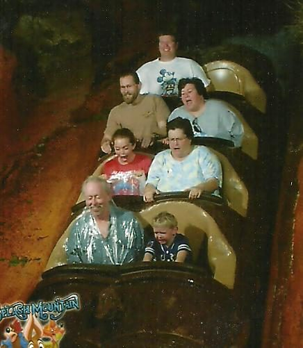
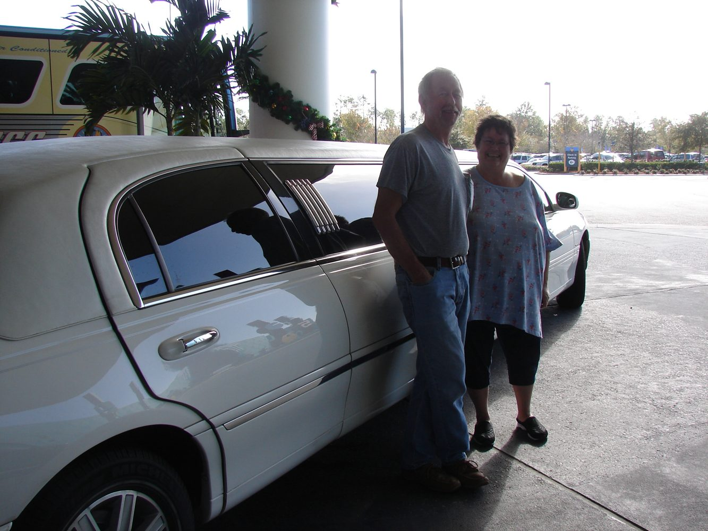
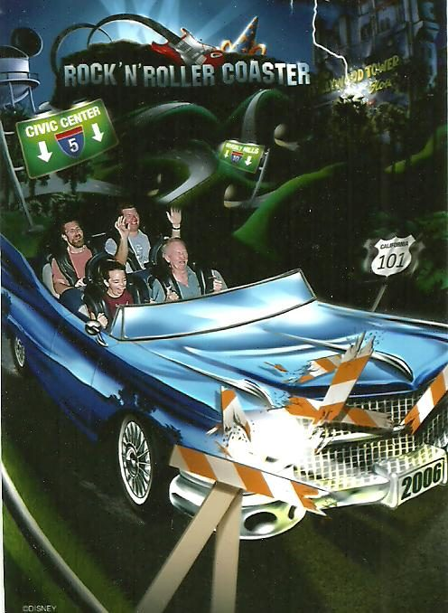
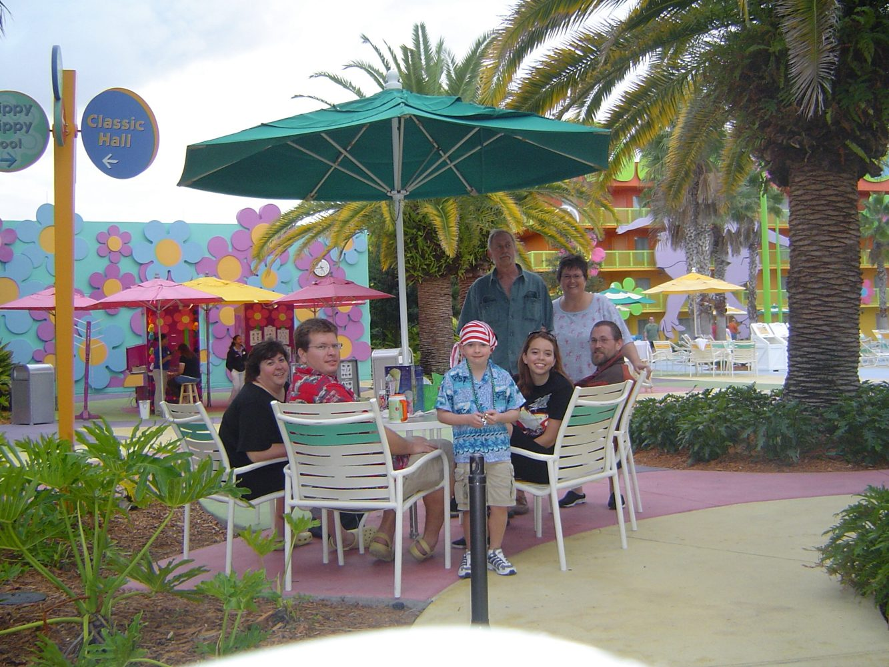
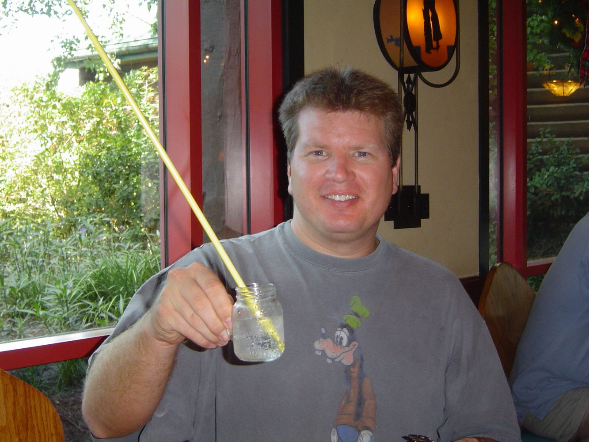
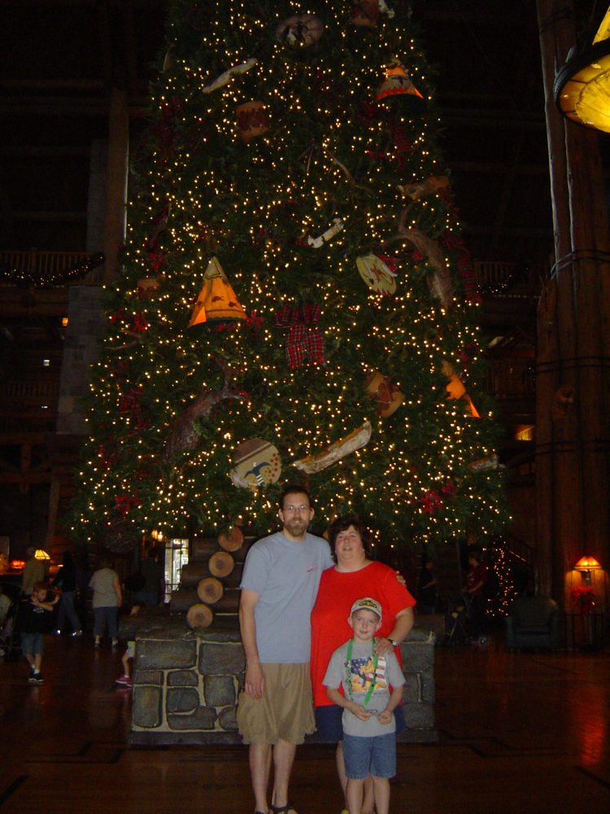
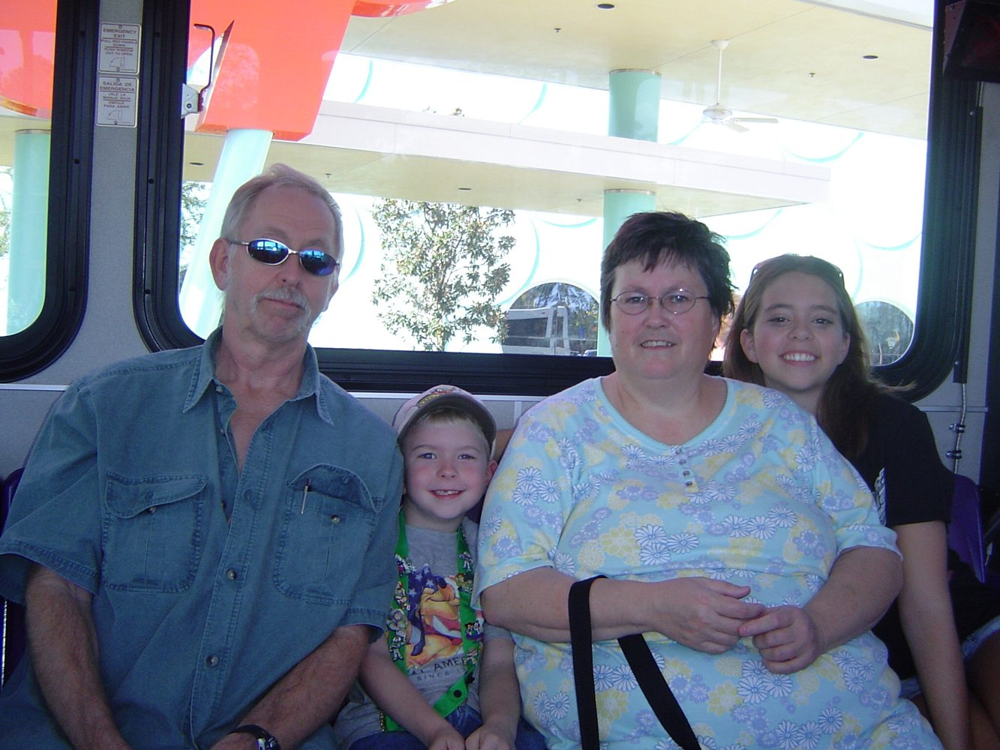
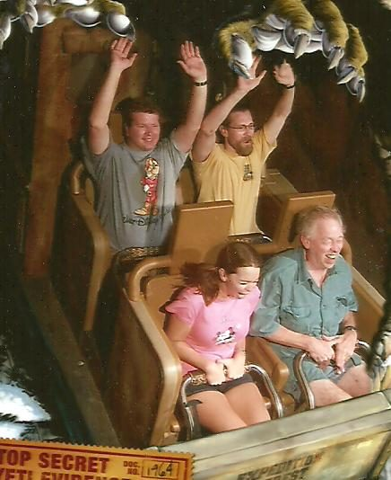
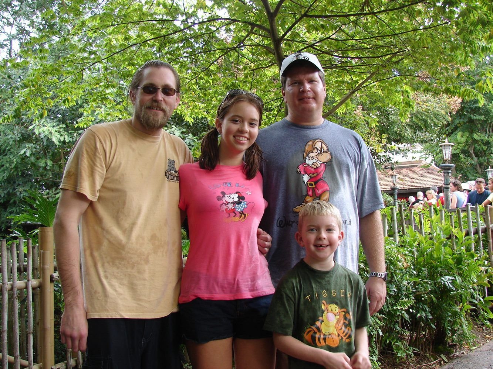
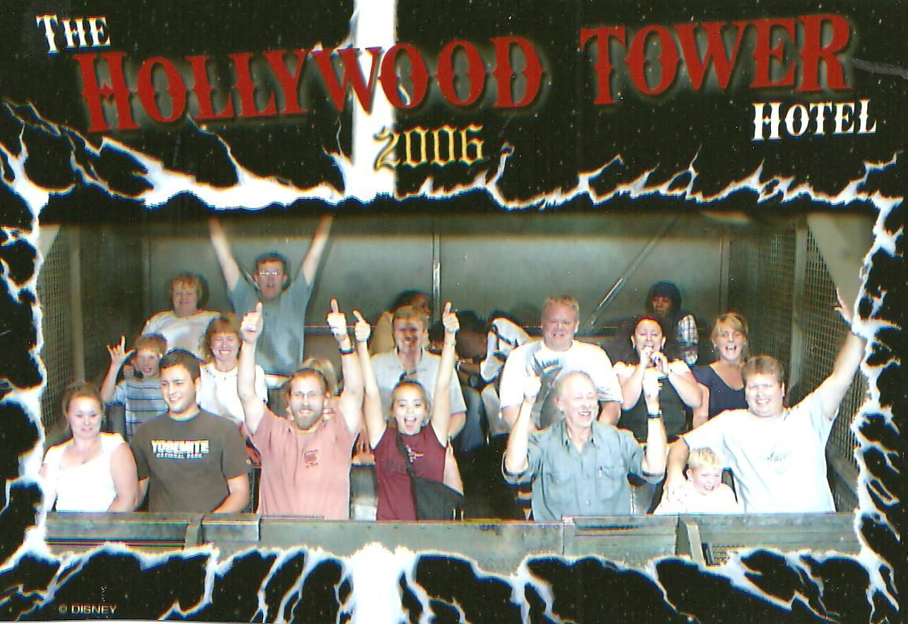

The WHOLE family finally went to Disney World! And I lived to tell the tale! They like it
Source: 2006 family trip.doc
The WHOLE family finally went to Disney World! And I lived to tell the tale! They like it too! November 2006
Well you know what they say? Be careful what you wish for……. You just might get it!! HAHA!! Alan said this to me while I was planning this trip once everyone had decided to join us and I was starting to go a little crazy trying to coordinate everything.
For a few years now my parents have contemplated joining us on a Disney trip. But they always change there minds. Don’t want to spend the money, don’t want to slow us down, etc etc. So this year was the same thing. We went to the beach together back in July and my plan was that we would use Alan’s Marriott points to pay for a place for all of us to stay. I was thinking that by giving them a “cheaper” summer vacation they would be more inclined to join us in November for Disney. However, once we got back and it was August they said they really didn’t want to go on another trip in just a few months. I made sure they were 100% sure and they were, so then I changed my trip dates just a little. We were originally going over Veterans Day weekend to attend Super Soap again and then to do the parks the following week with low crowds. However, the stupid school system changed there schedule and the kids no longer got the Thursday and Friday off for the holiday weekend. This meant they would be missing 7 days of school instead of the planned 5 days. Knowing how hard it was for Olivia to miss last year I didn’t think that was a good idea. So I thought that maybe we should go over Thanksgiving instead. The kids would only miss 5 days and Alan would also only have to take 5 vacation days instead of 7. So we looked up the flights and called and changed it. Plans were set and it was just the 4 of us going again.
We were booked at Pop Century for 7 nights with 8 day park hoppers and the dining plan. In around late September they released a discount code which amounted to about 40% off of the dining plan. We would be flying on Thanksgiving Day. But when I went to book the hotel for the night before our flight in St. Louis at the airport the price was about $200 a night!! Ahh holiday travel! So I looked at other not so nice park and fly hotels but they were also really high. So then I got to thinking that we never get good nights sleep the night before our flight so it’s too bad we can’t just take a late night flight! I wasn’t really serious about this since I knew that the day before Thanksgiving was a black out day for Frequent Flier tickets! But I looked it up anyway and guess what? There were FF flights available and one of the flights was leaving at 7pm out of St. Louis non- stop!! WooHoo!! I told Alan about the high hotel prices for the park and fly and about how it is such a waste to pack an over night bag and stay at the airport the night before our flight when we could just go straight to the airport and get ON the plane! He of course didn’t care and we called and changed it! There is not fee to change FF tickets as long as there are FF seats available on the flight you are switching it to.
Since Alan had flown to Singapore and stayed several nights at a Sheraton we had 3 free nights we could use at the Swan or Dolphin! Originally we thought these would be perfect for Super Soap weekend so that Olivia and I could walk over to MGM at the crack of dawn and not have to worry about a cab and traffic like years before. Well we aren’t going on Super Soap weekend anymore but we will now spend Thanksgiving at the Swan. We chose that over the Dolphin because it has queen beds instead of just doubles.
So we were arriving on Wednesday the night before Thanksgiving and staying 3 nights at the Swan then moving to Pop Century for 7 nights. Once at Pop our park tickets and dining would start. I tried about 1,000 different options so that we could get our park tickets to start when we arrived. But none of those options made sense money wise and since I knew the parks would be PACKED I decided that we just wouldn’t do any parks for those few days. So the plan is to spend Thursday and Friday relaxing and then on Saturday we will check into Pop and our tickets and dining will start.
Exactly 6 months ahead of time we were driving home from Niagara Falls and I made the phone call to get all our dining reservations. We were going to have Thanksgiving dinner at O’hanas! Later this got cancelled when I found out that they were doing a special menu for that day and not there regular menu! And by this time it was getting very close so there weren’t many other reservations left for Ohana’s! But a very nice CM got us in on Saturday night at 7:15! This later worked out to be perfect! Just wait and see!!
So the flights were booked and switched twice. The 3 free nights at the Swan were booked. The 7 nights at Pop with dining and 8 day hoppers were booked. And all our dining reservations timed perfectly and strategically made. There was not much left to do but wait.
THEN IT HAPPENED! Blake called and mentioned coming home in November. He said he wanted to come home for a visit and he also wanted to go to Florida in November too. So I began looking at flights and ways to plan things out. At the time mom and dad were thinking about going to the panhandle of Florida for a week in November. This would not be the same week that we would be gone though. So it looked like he could meet up with them at the beach and MAYBE meet up with us in Orlando but timing all of that would not be easy. Then mom and dad said they weren’t going to the beach after all. (Surprise!)
So at this point Blake cut the panhandle part of his trip out and was just going to come to Orlando and then he and some friends were going to the Keys for a week after that. Blake was going to be flying in on Thursday (Thanksgiving Day) and staying till the following Thursday morning. This would give us 6 days together! I will admit that I was excited to see him but I did also panic a bit since we have never been to Disney with anyone but the 4 of us! So this was going to be very different. I thought about changing some of our dining reservations around but Blake assured me that he since most of them were dinners he wasn’t a big eater and he would be fine on his own in the evenings. So I left them alone….. for now!
As Blake and I kept on planning we kept saying that it seemed weird for us to get together without mom and dad. So once he had bought his airline ticket which proved to mom and dad that he was serious about going they started thinking about joining us. Mom HATES to fly so she wanted to drive but that meant a lot of wasted days on the road. So instead we looked at getting them airline tickets out of Indianapolis non-stop! She hadn’t made up her mind yet but we were sitting outside one evening and she asked dad what his opinion was and since he never has an opinion we were all shocked when he said “FLY”! Mom looked at me and said book it!!
So the 4 of us are flying on Wednesday evening, Blake is flying in on Thursday evening, and mom and dad are flying in on Friday evening! (they didn’t fly on Thursday because dad thought he was working on Thanksgiving day, which he ended up not doing!)
Also Blake had found himself a motel. It was the Rodeway Inn on 192 and strangely enough when I looked it up on the map it was REALLY close to Pop Century! So that worked out really well. Then I convinced mom and dad to just stay at Pop and take the magical express. Well they weren’t sure of this at all because they wanted more space in their room and maybe a suite! Ends up that Pop was booked on Friday night the evening they arrived so they couldn’t stay there and use magical express anyway so I found them the Comfort Suites offsite also on 192 not far from Blake. They were going to stay there for Friday and Saturday nights and not get a rental car just use Blake for transportation! I worried about that! We also decided that Alan and Blake would pick them up from the airport and take them to their hotel. Then on Sunday they would check into Pop for 4 nights. Blake would drive them over and then they could take the magical express back to the airport at the end of their trip.
Tickets: Well we had our package with the 8 days hoppers so we were set. But Blake needed passes and once he spent some time looking at the prices he wanted a 10 day pass even though he would only be there for 6 days! He would also only be going into the parks for 4 days so it didn’t make sense but the price difference is just ridiculous! In the end I think he got the 5 days hopper and he waited till he was there to get it. Didn’t want to lose the darn thing! As for mom and dad’s park tickets. I had found a discount with Disney that if they booked a package staying 4 nights it worked out to them basically getting a 1 day NON hopper for free. Then they were going to buy 2 leftover park hoppers from me. They only had 2 days on them but this would allow them to park hop for 2 days and spend another day in just one park, so 3 park days total. Plenty for them. And cheap too since the 2 day hoppers they bought from me were only $100 each and their 3rd day was basically free.
Once all the decisions were made I spent a lot of time explaining the hotels, parks and transportation to mom and sometimes to dad too and then to mom again! I could tell that not all of it was soaking in at times! It is a lot to take in and sometimes I think that once you get there and “see it” some of the info will start to make more sense. At least that is what I was hoping! I am not a scheduled or picky person. Very fly by the seat of my pants! If I don’t want to do the dishes or make a bed ……….. I don’t do it! I break all kinds of rules! However, for the 7-10 days a year that I have in Disney I am VERY scheduled! I can tell you what park we will be in, what ride is 1st, and where we will eat lunch at months ahead of time! But I just KNEW these people were going to try and mess with my plans!! I shared this concern with Alan more then once over these days of planning and all he did was remind that I should in the future be careful what I wish for! And that I have always wanted to take my parents to Disney and that I have also wanted to see my brother! I think he’s just happy it isn’t his family going that way if something goes wrong I can’t blame HIM!
Time to go: Ok so mom and dad aren’t leaving till 2 days after us but they were packed about a week ahead of time. Meanwhile I was having trouble packing. I love to pack (hate unpacking!!) so I don’t know what was wrong with me. I think if I wanted to analyze myself for a minute that I was nervous about the trip. I get nervous that everyone will hate it and that they will all blame me! I was also nervous because we haven’t seen Blake in four years and I worried it would be strange to be around him again after so long apart. I worried about him and mom and dad getting along. I worried that mom and dad would accidentally drive to St. Louis to get on there plane instead of Indy! I also had a lot of bad dreams in the weeks leading up to the trip about all of the things I just mentioned!
So here it is the weekend before the trip and I have “scheduled” Saturday for putting up the tree and Christmas stuff and Sunday is for packing! Well Sunday came and I was the only one who showed any interest in it. I had to dig out all of Owen’s summer clothes and then I remembered that since he had been on steroids for his asthma for the past 2 months he has gotten bigger! So I made him try on some clothes and some didn’t fit! This took up a lot of time. My usual plan is just go through the list and lay everything out on the bed that I need and then start putting it in bags! It just wasn’t working well I just couldn’t get into it. So I made Alan come down the hall and help me. He went in the closet and laid out shorts and T- shirts for himself and then some socks and underwear and he was done! It took him like 3 minutes! Which kind if irked me! So over the next THREE days I managed to get packed very slowly!
Turns out if I could do one thing over it would be that I should have thrown in the extra duffle bag like I usually do. But I didn’t think we would need it and really didn’t have room for it in the bags we had. That makes no sense because if there isn’t room for an empty duffle in our bags then there is no way there will be room for all the stuff we buy while we are there!
On Tuesday night the evening before we leave Olivia’s boyfriend (Tim) is over till 5pm telling her goodbye! We aren’t sure he is going to survive without her! His mom showed us at 4:45 to tell him he had to go to his aunt’s house and he had watery eyes at the prospect of missing out on that last 15 minutes with her. His mom told him he would survive and I thought he was going to cry! The poor kid, his eyes were full of tears! Later in the trip she will call him a couple times and text him and it is a running joke that he misses her “super hard core”!! As he words it! Ahh young love!
Wednesday Nov. 22nd:
Departure day! Cast: Alan 37 Lisa 36 Olivia 16 Owen 7
So the kids go to school and Alan goes to work. We let Olivia drive the car to school and Alan took my van to work so I was stranded at home for the day. Which means I was forced to finish packing! HA!! Alan had a meeting this morning at 10am but at noon he called and was half way home! Once he got here I had him do a few last minute things like set the VCR to tape my soaps while we are gone. I stood there and watched him get it started and then handed him the rewound blank tape and then I ………wait for it……..wait for it……….left the room!!!!! Stupid mistake……….. it turns out that 10 days later when we get back and I go to watch my soap I hit eject and there is no tape in the VCR because he laid it down while he was programming and didn’t put the TAPE IN!! Well it was a big week in General Hospital history since Luke and Laura were having there 25th anniversary and she was only back for 3 weeks!! (he will never live this down! Our love is not so young anymore!!)
At 1:00pm I went and picked Owen up from school and when I got back Olivia was already home. They got out today one hour early at 2pm so I was only picking them up one hour early. We spent a couple minutes loading up the homework to take with us and then we loaded the rest of the carryon items and we were off! I had been worried about the holiday crowds at the airport and also the traffic in St. Louis. Well the traffic on the drive down wasn’t horrible but there was a lot of it! And as we got closer to St. Louis, it of course, got worse. Since it was the day before a holiday weekend I think everyone in that town got off work early because the traffic trying to get out of town was nonstop bumper to bumper and the ramps of people trying to get onto the interstate were stretched back for about a mile! And it wasn’t even 3pm yet!
Luckily it seemed we were the only ones going to the airport. We arrived at the Marriott Renaissance airport hotel, we pulled up and unloaded our luggage onto a cart and then Alan went and parked the van. You remember the really high $200 a night rates that I found for this hotel months before? Well it turns out that this is where we are parking our car at for 10 days anyway! We like parking it here and have never had any problems plus we know how to get here and not get lost. When Alan was in St. Louis about 1 or 2 weeks before our trip on business and he stayed at this hotel. He called and told me that if you aren’t doing a park and fly that they charge you $15.00 per day to park! So I looked up the rates for the hotel again and was able to get a rate of $79 for a park and fly!! I have absolutely no idea why it went down so much but I didn’t argue. So since he was still staying at the hotel at the time when he checked out he asked about using a park and fly rate but not spending the night. They said they didn’t care! So we booked the rate of $79.00 and got to park for 10 days with it!
So after we unloaded the luggage and Alan parked the van he went inside to “check in” then back outside where we loaded up in the shuttle for the airport. I have never seen so much luggage and yet still we could have used another bag!
We get to the airport and this is where the biggest shock of the trip happens! There were no lines at all!! We had one person in front of us to check in and then we got rid of our send through bags and went to security where there were also……………. no lines! We had to remove our shoes, unpack the laptop and the video camera etc etc which all takes awhile but no lines! So now we are done with all of that and it is only about 3:50pm! Our flight doesn’t leave till 6:10!!!!!!!! And I have pulled the kids out of school one hour early because of all the long lines!
Well the kids are now starved to death. Why? I don’t know because if we were at home we would not be eating supper for another 2 hours! We walked all the way down to our gate looking for somewhere to have a sit down meal since we have so much time to kill. They had 2 places to choose from but both were full and had no tables left so we walked all the way back to the security area to go to Burger King! YUCK! Not that Burger King isn’t any good but the one in the airport isn’t the cleanest place I’ve ever seen! I just got a burger and no fries, Owen got chicken strips I think and lib had a burger and shared her fries with Owen. Alan had a chicken sandwich and I don’t know the total but I am gonna say about $15.00! Cause it’s always high. Lib went and spent her traditional $4.50 on a Cinnabon with extra icing for dipping. And the had the nerve to tell us we couldn’t have any cause she used her own money! Ha! I don’t think so girl! I let her eat that burger and fries that was paid for with our own money so……. We all fought over the Cinnabon. And of course as usual it would just be too normal for us to buy 2 and split them because they are big and 2 between the 4 of us would be plenty. But no instead we argue over who got more then there ¼ of it!
While they had been in line getting the food I was left in charge of the carryon items and I called mom to tell her we were at the airport and through security. I told her the place is empty! She was surprised too and she knew how worried I had been about it being crazy busy. I had almost planned on getting bumped!! I was even slightly disappointed about not getting bumped! I was thinking free flights for a long time to come! But NO!

So anyway once we were done with our non- gourmet meal we still had an hour and a half left to kill!! We went down to our gate staked our claim on some chairs. Owen played with his hand held game and some of his junk in his backpack. Olivia used Alan’s cell phone to call Tim! He wasn’t expecting that and was surprised. And her and I looked at all the magazines in the gift shop and eventually bought the two cheapest ones. At $1.99 each.
We sat and read them and people finally started showing up for the flight other then just us. There was a couple with a little dog sitting behind us and I thought to myself that it’s a good thing that isn’t a CAT!! Owen can’t seem to handle being in breathing area of cat without getting really sick and if there was one on that plane with the recycled air it would not be good!
Someone commented on my cute Disney bag with the pictures on the side and that made me happy because lets face it that's the only reason I have the bag to begin with. We finally board the plane and leave on time at 6:10. Also interesting is that the plane was only about 70% full! Many people got up and moved seats in order to stretch out.
We landed on time and were making great time arriving at the Alamo car rental counter pleased to see no line! Alan parked us and our TON of luggage and then went to do the paper work. This took a lot longer then it should have! I finally walked up to see what the problem was and he was done. There were 3 employees and 1customer but he got the super sssslllllooooowwwww lady!! So we haul our stuff outside to pick out our mid- size SUV. It was $130 for 3 days and that was with a coupon and booked way in advance. When I checked prices as the trip got closer the price was over $200!! Jeez! We will be returning it to the Dolphin hotel on Saturday evening.
Well there was no big decision on which car to pick since there was only one mid size SUV left! And yeah it was RED! The most common rental car color in all of Disney World. Oh well.
This is a pivotal moment. It is usually at this point on travel day that Alan looses his “cool” because our stuff doesn’t fit! This anger is usually aimed at #1 me because I am the one who rented the car and should have known better. It is also aimed at #2 Olivia. This is because she has a smart mouth and for the life of us we can’t figure out why she can’t learn to hold it in at times. But no she sees her dad is getting madder and madder and she just keeps the comments coming! Until nasty things are said, and we threaten to not bring her next year. Happens every time! However this year is different. By the time that Olivia and Owen are in with there backpacks in the back seat Alan has tossed all the big bags in back and shut there door with a big old smile on his face! I walked around the back just as he was shutting it. He was pleased as punch! He looks at me with amazement and says it all fits! No cramming, no shoving, no swearing, no blaming me or Olivia! We hopped in the front seat and we are OFF! Wow that took all of 30 seconds!
We have big smiles on our faces, especially Alan and we roll down the windows to smell the Florida air but the air was COLD so we rolled them right back up! Brrrrrr. Then as we made our way to the exit there are two booths and you choose which lane to go through. There is one car at each so we just get in line. Well we sit and sit and sit and this is where Alan starts with the nasty comments and the threatening. None of it is aimed at us but at the guy in front of us. It seems there is a problem with his rental or his credit card. Eventually the car in the OTHER lane leaves and the lady working that one comes over to help the lady in our lane and when she is done as she walks back to her booth she motions for us to come to her line. Well if you can picture this is a grocery store then you know what is about to happen. Just as Alan backs our car up a bit a car comes and gets into that lane and takes our spot. We go ahead and get into the new lane anyway thinking that at least this person won’t have a problem checking out. Well think again!! We sit and sit some more! We are only talking about 20 minutes but this is 20 vacation minutes and we had been on such a roll! Flight on time, luggage came out quickly, luggage into the car quickly! And now we wait! So now the original car with a problem in the lane we WERE in leaves and that lane is empty! But about 2 seconds before Alan backs up to head back over there the guy in front of us is done and we check out which takes us 2 seconds and we are set free from airport property!! Olivia commented that it took longer to get that rental car then to check in and get through security at the airport! But……….
WooHoo BABY we are officially HERE!
Just as we exit airport property we see a dear standing over to the side of the road! We thought this was interesting in the big city.
We are now on our way to the Swan which is considered a deluxe hotel! We are used to the Pop Century and the value hotels. But for the next 3 nights it is deluxe all the way baby!! We will have someone open our car doors, help us with our luggage, we will have a view of Epcot, MGM or at least a pool, we will have a balcony if we are lucky, and we will have 2 queen beds not doubles! Oh and indoor corridors!! Plus we will be walking distance to 2 Disney parks! I was SO excited!! Oh yeah and it was FREE!
We cruised down the highway singing loudly to the radio and reading the billboards like we had never seen them before! We also spent $2.00 on tolls but Alan was so happy he didn’t even care! (that is actually not true he complained about it!!)
Then Alan had the nerve to suggest we stop at Walmart for some supplies! The kids and I screamed at him! NO WAY! We weren’t going to let him kill our Disney buzz with a stupid Walmart! Plus it was getting late around 10pm.
We pulled up to the Swan and Alan went in to check us in while some poor guy unloaded all our luggage! The kids were all excited and I played it cool and pretended not to be! HA HA! Once Alan was done he had to go out and move the car because we might be willing to accept help with the luggage but we weren’t about to pay for valet parking! Especially not when all Alan had to do was drive the car over, park it and then walk the 10 miles back to the hotel while the kids and I waited on the couches in the lobby! They charge $8 per day to park it yourself and I think it was $15 for valet. So technically you are paying an extra $7 for valet but Alan was not interested in that at all. The room was free so I said just think of it like you are getting the room for $15 a night and live it up. But no way was he doing that.
This whole checking in and parking crap took about 30 minutes at least. I would have done the checking in while Alan parked the car but it was under his name with the free points so I couldn’t.
Up to the room (786 west) and $10.00 in tips later (and worth every penny, the guy probably deserved more!!) we were digging through our bags in search of warm sweatshirts to put on. We were freezing! As soon as we got our layers on everyone was hungry. The sandwich at 4pm with no side items have worn off. So at 10:55pm we leave the room and are off to explore. Keep in mind that it is only 9:55 Illinois time. But we have all been up since 6:30am though.
I really wanted to walk over to the Boardwalk but I was afraid it would be too late and too cold since it is on the water. I had read about the Swan and the Dolphin hotels online and I knew that the Dolphin which is right next door has a lot more food options and also has the cheapest options. Also you don’t have to cross a street or anything to get there just walk along a landscaped walkway. So we walked outside and across to the Dolphin hotel. We’ve never been inside here and it is huge. We got a little lost trying to find the Picabo fast food/cafeteria. After a few wrong turns we find it and yes they are still open! Turns out they are open 24 hours! Who knew? I didn’t.
We obviously didn’t need a huge meal so we ordered 4 kids meals. Owen got a hamburger, Alan got the mac and cheese and Olivia and I got the chicken strips. We also ordered 2 cokes. This came to ….wait for it……. $25.00!! I kid you NOT! I really thought we were going to have to pick Alan up off the floor! He was ready for the dining plan to start NOW!! We paid and sat down and they brought it to us when it was done. Everyone’s came with fries except Alan’s. It was pretty funny. He was still having sticker shock from the $25 and they come out and sit a small bowl of mac and cheese in front of him and…….that is it! We all got plates with our main item and a side of fries so it looked like more food. I don’t even think Olivia ate all of hers, she gave Alan a chicken strip. But his face was priceless. I guess he thought he was going to get a side item.
After eating we walked back to the room. It had hit us now. We were all tired. When we 1st got into the room earlier we were still wound up from just the excitement of being here but while we waited for our food and were eating it hit us.
So I dug into the bags to find our pj’s and then I unpacked some of the bathroom stuff. Olivia was out before I had the pj’s unpacked. Owen was not! Then we realized we needed to call down for a pillow that didn’t have feathers for Owen. So we had to wait for them to bring that and it took about 30 minutes. Me, Alan and Owen didn’t get to sleep till about 12:50! We tried and tried to get Owen to fall asleep sooner but he just wouldn’t.
By the way the Heavenly beds at he Swan (owned by Sheraton) were comfy!!
Also our room did have a balcony but not an Epcot view (DARN!!) We had a view of the pools, the Dolphin hotel, the Tower of Terror, and Expedition Everest at AK way off in the distance. I was a little bummed about the view though because everyone talks about the Epcot and Boardwalk views. We couldn’t see any of the fireworks from our room. Alan was fine with the view until he later saw what the view would have been if we had faced the other way. But oh well that's what you get when you check in at 11pm!
Thursday Nov. 23rd
THANKSGIVING DAY!
We slept till 9:45! And we needed it. We were pleased to see that it was very bright and sunny out today. And at least it LOOKED warm so that is a good sign. We just laid around for about a half an hour then we started taking showers and getting ready. At 11:15 we left and walked next door to the Boardwalk. Which is a Disney hotel and a huge area of shops and restaurants.
They have a small general store and so we went in and purchased a box of donuts $3.99 and a chocolate milk $1.99. We were pretty pleased with ourselves. We had breakfast for 4 for a total of $6.00 and we were eating it sitting outside at a table on the Boardwalk with Disney World as our view. We just had to make sure to stay in the sun because it wasn’t too cold out unless you were in the shade where it felt about 20 degrees colder.
I took a few pictures of us sitting in the sun eating breakfast at almost noon on Thanksgiving Day. We then went into the gift shop and looked around and walked around on the Boardwalk to see what other shops and restaurants were there. Olivia REALLY wanted to rent a surrey bike but we kept telling her NO! We have done that in the past and it is an uphill battle and is not nearly as fun and easy as it looks.
We walked back over to the Swan and checked out the pool areas. The large grotto pool with the waterfall and slide was FREEZING! The lap pool which is closer to the hotel wasn’t too bad. They also had a ping pong table and a basketball area.
We checked out a couple of basketballs and they all played for awhile. Owen got smacked right in the face with a ball and that hurt! I say it was Alan’s fault because he was catching the balls as they came out of the basket and then giving them to Owen but Alan was talking on his cell phone and missed one of them which was the one that hit Owen right in the face! So as I said I blamed Alan and was quick jump all over him about it to make him feel bad! However, Alan was quick to point out that he wouldn't have been on the phone if my mom hadn’t called him so he said really it is her fault! (HAHA!!) Anyway Owen was a little timid after that. After a while I talked Olivia into giving up the basketball for a drink with me at the pool bar! Surprisingly it seemed like I had to beg her to come with me. Her and I grabbed a couple bar stools and sat to wait on the bartender who had gone inside to the restaurant to get someone’s food order. The guys didn’t know where we were and we positioned ourselves so that we could see them but they couldn’t see us. After all I didn’t want to have to buy everyone a drink! We got 2 virgin daiquiri’s ($11) then as we were about to get up and leave the bar area with our drinks the boys found us!

So we all went over and sat on lounge chairs at the beach area. They had several hammocks which they had tried out earlier when we 1st got to the pool area. Olivia managed to flip herself all the way over earlier. So her and I took the regular loungers to enjoy our drinks while Alan and Owen played on the hammocks. Then Alan called his Grandma Millers’ house to say Happy Thanksgiving to his mom, sister and grandma and also to say I’m laying in a hammock and your NOT! We also called Blake because we figured he was either at the airport or on his way. It turned out his drive to the airport was with major snow and blowing and he had his doubts that he would make it. But he did and his plane was just a little bit late in leaving. But not enough to mess with his connection in Denver.
I also spent a few minutes taking some pictures of Olivia in front of the waterfall and landscaping. Owen got in a couple of them too.
At 2:00 we went back up to the room and the kids are relaxing and watching TV while I am writing this. Alan went down to the lobby to get online and see if he can buy some of those Thanksgiving Day sale items. He didn’t have any luck though.
So at 2:30 we left and drove over to find mom and dad’s hotel. We just wanted to know where it was so we didn’t get lost trying to find it after dark when Alan picks mom and dad up at the airport. We never go to that area of Orlando so we weren’t sure what all was over there but we found the Cracker Barrel just down the rode and that was where we were planning on eating our Thanksgiving lunch/dinner. Nothing fancy like all the other people that go to Disney World. Everyone online is eating as various fancy places but we didn’t want to spend a lot for turkey dinner and since we had a car today we just decided this would be good enough. Besides Disney actually raises the prices in their restaurants for a holiday meal so I wasn’t eating there just out spite.
We didn’t have to wait for a table since it was 3pm but the place was still packed! And they had set up a bunch of extra tables and chairs for the extra holiday crowds. We had driven past many restaurants that were closed so I guess this place had planned for the huge crowds. They had those Rubbermaid type tables like we use for garage sales with table clothes over them and then folding chairs. These extra ones were set up anywhere they could cram one. We got to sit at one of these tables in a back corner. We all had our usual none of us ended up with turkey. But when they brought out our food they had messed up our side orders. Owen was the only one who didn’t have a side order messed up. The manager came right over we didn’t even ask for him and said he would bring out the correct side orders immediately and he was VERY apologetic. You would have thought that we had thrown a fit or something which we didn’t! Then the waitress came out with the correct items and said that for messing up our Thanksgiving Dinner we are getting free pie! That’s right a free piece of pie for each of us! Well once we were done with our meals we were so full we couldn’t even eat the pie but the waitress said no problem she let us each choose what we wanted and she boxed it all up to go! Owen got pecan, Alan had pumpkin, and Olivia and I had the apple crumble. With tip our dinner was $40.00. And we had free pie for later!
From here Alan showed us the short cut/back road to the Walmart. This ended up being a waste of time because Alan and Blake ended up stopping the next night on the way to the airport to pick up mom and dad and they got some stuff. They could have gotten everything on my list then. So anyway we picked up 2 pillows for mom and dad who are too good to lay there heads on hotel pillows! We were going to get beer for dad but didn’t have a cooler big enough to keep it cool so Alan will get it tomorrow. Got some chips, bottled water, wheat thins, cheese sticks, diet rite, and that's about it. But somehow we spent $35.00! And once we got checked out I remembered the camcorder tape I needed so I sent Alan back in for that ($8) while we went out and loaded the car.
If there is one thing I hate doing while on vacation it is spending my time in a Walmart! The only thing I hate more is spending time in the doctors office or emergency room! But with Walmart I say it is the same stuff as every Walmart in America so what is it that we are shopping for? Just go in get what you need and get the heck out of there! We can shop at Walmart at home! This is hard for Alan and Owen to understand but at least Olivia backs me up.
Olivia’s big meal has now hit her, no not in THAT way. But she is fighting to stay awake! She can hardly keep her head up! She is trying to fall asleep in the car before we even get out of the Walmart parking lot. It was 4:30 and we had only been up since 10!! We were deciding whether or not to go back to the hotel. Olivia wanted to go back to the room and take a NAP! But the fun loving members of the group still wanted to go out and have some fun!
She was out voted 3-1 so off we went to Downtown Disney! (DTD) Any trip to DTD with a car is always a challenge because you have to find and empty parking place. And WOW was this place packed! We went to the World of Disney store 1st and we all commented that the parks must be empty today because THIS is where EVERYONE is at! I gave Alan strict instructions not to let go of Owen and then I turned around and they were gone. So was Olivia and I didn’t even see what direction any of them went! I guess I should have given strict instructions not to let go of ME! Now normally I could have used this time to browse and shop and I did try to do that but it was butt to butt people! And I worried about where they were and if I would ever see them again. Finally I found Olivia. We just happened to bump into each other. We called Alan on his cell and waited for him in the dead center of the store. As soon as we met up with them we headed out. But 1st Olivia wanted to show us what she had found…… the Bippity Boppity Boutique!! Which is pretty much for the age group of 3-11 maybe? Not that there is a SET age but it just screams 5 year old!! And she wanted to do it! The packages were $35, $45, $175!! YEP $175!! That last price included a princess dress (which don’t come in Olivia’s size!) but they will do your hair, nails and makeup. And the little girls were lined up out the door. What I thought was funny was all the dads standing around waiting and looking like they would rather be ANY place else! We told Olivia NO! And exited! She’s very upset that they didn’t have this back when she was younger.
We went over and got our free sample from the chocolate place. And then Olivia and I sat on a bench outside the sports store while the boys looked around. I sat down and dropped my free sample! Argh!! But 5 second rule and probably a 10 second rule on chocolate so I picked it up and ate it. Olivia laughed at me. We sat and people watched for about 10 minutes and then the boys were done and it was so busy that we decided to just leave. They were setting up for some kind of performace I think it was a dance group but can’t remember. I do remember kind of wanting to stay and watch but it was too cold and we were dressed for afternoon. By this point it is 6pm and getting dark. So we had to choice but to leave.
We have heard that the past week has been VERY cold but that each day is getting warmer and warmer. And every time we complain to anyone about the cold they say that we should be lucky we weren’t there at the beginning of the week.
Back at the Swan Alan pulled up to the door and we unloaded our Walmart sacks and our bag of free pie! Then the kids and I took our stuff on up to the room. Poor Alan had to go park the car way over in the poor man’s lot and walk.
We hung out in the room and watched an episode or two of Friends that was on TV. And some of us snacked on wheat thins with Owen’s cheese sticks cut up and placed on top of them like little appetizers. But of course by 7pm Alan and Olivia are bored and want to rent an in room movie. For being a starwood member with Sheraton Alan got a choice of some extra points, a bottle of cheap wine, an in room movie, or something else. He told them he would take the points. However, now he wants to take the movie so his plan is to order the movie and tell them later at the front desk to switch it.
They chose Talladega Nights (with Will Ferrell but I can’t spell the name of the movie!) Olivia has seen it already but Alan hasn’t and really wants to. I ask her if it is BAD? She says no. I said but it is PG-13. She says yeah but it’s not bad and most things will go right over Owen’s head. So they get it. Well about 10-15 minutes into the movie I am MAD!! This movie IS bad! And I now have to get Owen out of there! A lot of cussing in this movie and NOT appropriate! So we put on our sweatshirts and shoes and leave!
We were just going to go and explore the Swan hotel but other then the gift shop well…….. that’s all there was! No arcade, no fun stuff so we left to go over to the Boardwalk! Ahhhh I had wanted to do this anyway so this worked out perfect!
We took the boat over even though it was a short walk but since I didn’t know what all there would be to do over there I thought I might need to kill some time and the boat is slow and relaxing but has a good view so why not! We got on a pretty full boat and had to sit by this group of 3 couples who just cracked me up! The one woman saw the large Epcot ball off in the distance that has the little wand that lights up and says the word Epcot! Well she thought this was the fireworks going off! She started to freak out that they were missing the fireworks! Then they proceeded to talk about Disney and they didn’t sound like they had never been there before but yet they were the dumbest group of people I had ever heard talk in a long long time! They were all dressed up and looked like they had some money but these women seemed like the dumbest blondes ever! I just kept wishing that Alan and Olivia had been here to witness some of this because it was lost on poor Owen. And I kept hushing Owen so I could hear these guys! They discussed not only Disney but their kids who weren’t with them on the trip but were young and they talked about trying to have another and gave each other advice and tips and I was seriously trying not to bust out laughing! If either Alan or Olivia had been there to exchange glances with me I know I would have! The women also flipped out when the boat pulled up the Yacht and Beach Club hotel because they thought they were on the wrong boat since it didn’t go straight Epcot!
Anyway after and interesting boat ride we got off at the Boardwalk and walked around for just a few minutes but we stopped to watch a juggler do his act. It was about half over but Owen just loved it! He really took it all in. Once the show was finished we wondered around for a few minutes and saw a magician setting up for his act. So we went and sat on a bench and huddled to keep warm until his show was starting. We watched him do several different things and then just as my cell phone rang the guy picked Owen out of the audience to be in the show! It was Alan on the phone wanting to know where we were and I said in very fast speed that we were on the Boardwalk and Owen just got picked to be in a show and hung up on them! Well it turned out that this guy just needed someone to help him out for about 2 minutes and that was it …no biggie! The guy just needed to have someone throw the bowling pins to him while he balanced on a ladder.
However, later on after Alan and Olivia showed up (winded from running so they could see Owen in the show! Only to find out it was nothing and they had missed it!) Owen was picked again along with a little girl who looked about the same age. The skit that they did was really long at least 15 minutes and Owen was the hit of the show! We have never laughed so hard in all my lives and I would have given ANYTHING to have had my video camera to re-live that over and over! Heck, even just a regular camera would have been nice too but I hadn’t didn’t have that either! Since we had left the room to just wonder around the hotel not expecting to need a camera.
The guy kept telling Owen not to worry that nothing bad would happen to him but it was the girl that needed to worry and then he would give Owen the thumbs up and Owen would give him the thumbs up! The guy tells jokes and then looks at Owen and Owen gives him the thumbs up. It was like it was planned that way so it was funny. Owen had the crowd cracking up! Then the guy takes a black satin bag and puts it over Owens head. It didn’t cover him totally but he couldn’t see. This thing stayed on Owens head for more then 5 minutes as the guy plays some various jokes on the girl but he keeps asking Owen questions and Owen only responds with a thumbs up!! And the crowd laughs! Eventually the guy makes several comments to the kids about dating because they are the same age and he asks the girl how long she has left on her vacation and she says 2 days he then asks Owen and he says 10 days! The guy says Owen your going to have to work FAST! Then he asks them each where they are from and the girl is from Texas and so he tells Owen he’s gonna have quite a commute. Owen gives the thumbs up at all the right times and it is very funny. This was a very funny skit but I must say that Owen was the star of this show!
When it was over he was blushing and I was SO happy that Alan and Olivia had made it there in time to see him! We realized it was pretty late and started walking back to the Swan telling them all the fun things we saw and did while they laid in a hotel room and watched a movie!! My feet were sore and I hadn’t even been in a park today but I had stood on that Boardwalk for 3 straight hours watching these shows.
Back at the room and into pj’s then Owen and I ate our pie from lunch. Alan and Olivia had ate there’s while watching the movie. We watched an episode or two of Little People Big World (Owen and I love that show) and at 11pm we called Blake to make sure he hand landed. He didn’t answer but called us back a few minutes later saying that he was on the highway in the dark and couldn’t get to the phone in time! (that is why he should have called us when he landed and was still at the airport waiting for his luggage!) He was now on his way to his motel.
Then lights out for us.
Total spent today: $6 breakfast of donuts and choc. Milk $11 2 virgin daiquiris $40 lunch/dinner at cracker barrel $35 Walmart
Total $92.00
Friday November 24th
Ok, before I start today I will say that I didn’t sleep too well last night. Even as tired as I was I was a little nervous about today because we would be seeing Blake for the 1st time in four years. Both excited and nervous.
Anyway up at 8:45 we all got showered, dressed and ready. At 10am we went down for some breakfast. It seems that when Alan checked us in the other night they gave him some coupons for being a Sheraton starwood member and they were for some breakfast items. At 1st glance I thought the coupon said that each person could choose 1 bakery item OR one piece of fruit OR a beverage! And I also thought that it was to be used in the sit down restaurant so I figured we would get our one free item and then order about $30 worth of other food items to fill us up. Well it turns out that we were both stupid. Alan was stupid for not knowing since he is the one they gave it to and I am stupid for not reading it more carefully and asking more about it.
So it turns out that the coupons are good at a little coffee counter area and we each get one bakery item, one piece of fruit and one beverage all of our choice. So instead of our $6.00 breakfast of donuts yesterday we could have just had this for free. And they even put it in a sack so we could have just taken it to go and sat out on the Boardwalk and eaten it like we did with the donuts. But live and learn at least we figured it out while we still had 2 mornings left.

So we went down to the coffee counter and grabbed a small table while Alan got our food. Some of us had bagels and others had large muffins and with that and our drink we ended up saving the fruit for later. The really ridiculous part is that had we paid for this food it would have been $26.00! Can you believe that! For 4 fruits, 4 bakery items and 4 drinks!
At about 11:00 we left to drive over to the Lake Buena Vista outlet while we were waiting for Blake to call us. The outlet is not very far away so it would just give us something to do and we wanted to go there anyway. Well just as we are leaving Disney property Blake called and said he was awake and just needed to shower. I told him that I thought we would just pick him up and he could ride with us today in order to find his way around easier. He was all for that idea since he had some trouble finding his way around last night. And he said he would be happy to not drive again all week! So he said to give him a half an hour and then pick him up. When I hung up I was telling Alan how Blake had gotten a little lost up last night trying to find his way from the airport to the hotel and Alan said he was probably on his way to Daytona! (or Tampa!)
We went ahead and went to the outlet mall but they had moved the Disney store to a different spot in the mall area so we were worried for a minute that it was closed! This place was very busy! After all it is the Friday after Thanksgiving at 11:00am!! Shoppers are everywhere! Somehow we found a parking place and went to the Disney store and then the KB toy store. Alan bought a hot wheel ($6) and Owen got a stamp set and a notebook ($7) and that's all we bought.
We got in the car to go pick up Blake he had said to give him 30 min. but we could take longer if we needed it. Well it was about 45 minutes and I called him to tell him we were just about a block away so I could find out his room number but he said he would just walk down to the lobby and wait for us there. So we pull in to the Rodeway Inn parking lot and are driving toward the lobby area and yes I do see a person standing out front but I HONESTLY did not realize that was him!! Now I know he has long hair and a beard he had those last time I saw him but it has just been so long. Also he is so skinny that he looks anorexic! So all of those things all combined and it took me a minute to realize that was him. Alan stopped the car, not parked just stopped and I jumped out of the front seat and hugged him and was reassured when he was hugging me back and then he spoke and I recognized his voice! I thought oh good it is him! I hadn’t just jumped out of the car and hugged a stranger! He said it was good to see me and I said the same back to him and started to get a little teary eyed. He then looked into the car and said hi to Alan and the kids. I let Blake sit in the front seat and I got in back with the kids. I thought he needed to sit in front so that he could see how to get from his hotel to Disney property and find his way around.
We drove back to the Swan hotel going right past Pop Century so that Blake could see where it was at since he will be driving there this week once we switch hotels. Once we got to the Swan we parked in the self park lot and when we all got out of the car there was an slightly awkward moment because the kids had been so excited to see him and I know he was excited to see them but we just needed to kind of break the ice so I said give Blake a hug and they both did. I don’t think either him or the kids would have done it on there own but as soon as I said it that kind of loosened them up a bit.
So we didn’t go to the room we took him out by the pool area and they got some basketballs and played for awhile. Owen still hasn’t forgotten that he got smacked in the face with a ball yesterday! I called mom and dad they were on the way to the airport in Indy. I let them know that Blake was with us and we were just hanging out. After awhile we decided to put on our suits so Olivia and I went up to the room and got our suits on and then brought Alan and Owens suits down to them. They have a fitness room and so right beside that is changing room with showers and everything. So we let the guys just change in there and Blake had brought his trunks with him so he changed there too.
Then we walked over to the Grotto pool which is the big main pool with a waterfall and pool slide but it is also the one that is freezing! But we went and as soon as we got there Blake walked right up to the pool and just did a big ole jump right in to the freezing water! Then Alan walked Owen over to a more shallow area and Owen (I guess not realizing how cold the water was) jumped in!! Well he came up out of that water so fast! Alan had to reach down and grab him by the arms and pull him straight out! I think it literally took his breath away. But then they got back in and Alan got in too. This is shocking because the kids and I know that Alan doesn’t like to swim in water if it’s not over 85 degrees. When we go to hotels with indoor pools he NEVER wants to swim it always too cold! But anyway Blake, Alan and Owen got in and swam for about 10 minutes! Owen got out long enough to go down the slide twice but then they all 3 gave in and said it was way too cold so we gathered up our stuff and went back over to the pool closer to the Swan. (the grotto pool is shared by the Swan and the Dolphin hotels but then each have there own separate pools too) The water over here is much warmer. Olivia and I even got in and swam too. The boys played ball and we all swam around and talked for about a half an hour maybe closer to an hour.
After awhile we got out to sit in the sun and dry off and later Alan and Blake went and changed out of there suit. We then all went up to our room so the rest of us could get changed. Alan and Blake sat out on the balcony while we got changed. Blake is very afraid of heights so he kept his chair as close to the sliding door as he possibly could! It was funny. Especially since it didn’t seem like we were that high up, maybe the 7th floor or so but I’m not for sure.
By now we are all starved to death and Blake hasn’t eaten since I think the Denver airport! So we loaded in to the car and drove over to Joes Crab Shack! Since it was the middle of the afternoon they weren’t busy. We have been here before when the people are lined up out the door!
We ordered an appetizer of calamari which we all ate. Owen of course had the kids shrimp meal. Olivia had the $12.00 appetizer platter for her meal but we all helped her eat it. Alan had seafood pasta stuff. I had fried shrimp and fries. And Blake ordered some kind of fish with broccoli and rice. Blake and I also added a salad for 99 cents and it was a big salad. When the waiter brought them out Blake commented to him about the size of the salad for the price. Blake also ordered the hush puppies which are really cheap. I think they are like 12 for $1.99. I think Blake was so hungry he just kept ordering food! LOL! They also give you corn muffins to eat while you wait on your food. Once they brought our meals out Blake made a comment about how long it’s been since he’s had French fries and so he kept stealing them from my plate. This was fine by me because the only fries I really like are fresh McDonalds fries anyway. Our waiter who was lacking in personality took awhile to bring the bill so I went to the gift shop and bought Owen a Joes sweatshirt on clearance for $5.00. They didn’t have any left in Olivia’s size. Alan paid the bill ($65 + tip) and we headed out very stuffed!
The plan was to head over to the premium outlet mall which isn’t very far away. But let’s not forget that it is still the day after Thanksgiving and the biggest shopping day of the year! Well I know none of us will ever forget the mob scene we saw at the outlet mall! And we never even got out of the car. People were just parked along the side of the busy street, they were parking up in the grass right next to the buildings, and they were parked 2 miles down the road. And we have never seen anything like it! I don’t know what kind of sale was going on in the mall but it must have been an everything is free sale!! This was not the same mall we had gone to earlier this morning before we picked Blake up that mall was much smaller. So anyway Alan kept driving and got us out of there. We took a new road we had never been on before but it curved around and we managed to get back around to Disney property. We weren’t really very far from it to begin with though. So then we had to think of a “plan B”! I was disappointed because I knew we had to take the rental car back tomorrow and I didn’t think we would have time to hit the mall then. Plus I would expect it to be just as busy then too! Blake spent most of this time just shaking his head shocked by the amount of people!
So when the going gets tough we go mini-golfing! We drove over to the Blizzard Beach water park area and went to the mini-golf over there. The water park is closed down for 2 months so we usually find this mini-golf to not be too busy. We were right it wasn’t! After the mess we had just left this was like a whole new world (pun intended!) It was $54 for all of us! (nothing is ever cheap!) But I had a $50.00 disney reward credit so Alan used that to pay for the golf. We got our clubs and Blake had kept saying that he was really good at mini-golf! Well we soon found out that he was mostly just full of crap. We warned him ahead of time to watch out when Olivia was up because she tends to hit like a maniac! We all had fun goofing off and playing. The kids posed for some pictures too. And even though it started out looking like Blake had been bragging earlier in the end he did better then the rest of us. Alan wasn't too pleased with this since he is the one who actually golf’s more then the rest. It also seemed that I was on a major loosing streak! It became down right funny that I was doing so bad! Being the detailed person that I am with my trip notes I can even share a little extra info. The number of hole in ones that each of us got: Blake = 5 Owen = 3 Olivia = 2 ALAN = 2 ( what a disgrace!) Lisa = 0 (also a disgrace!)
Yes that's right I got zero! But I’ve moved on and am ok about it now. Took me some time though. Lol Once we were done we all took a bathroom break and then we had one of the CM’s take a group picture of us before we left.
By the time we left it was around 5:30 so Alan and Blake dropped me and the kids off at the Swan hotel. Then they were going to go stop at Walmart to get some of the things that were on mom and dads list and then pick them up at the airport. We were supposed to pick up some cold beer for dad when we were at Walmart the other day but we didn’t really have a way to keep it cold so Alan said him and Blake would just make another stop on there way to the airport. There plane was getting in at 6:50pm.
So the kids and I were just chilling out in the room for a little while and I wrote up all of today’s notes so far. (Which was quite a bit!)
Well Olivia is happy as a clam to lounge on the heavenly bed and watch TV and relax however Owen and I were bored within one hour. And I had spent a good portion of that hour writing notes so really once I was done with that I was bored within about 15-20 minutes!
The Swan hotel was having Christmas arts and crafts in the lobby from 6-7 and also Santa would be there too. So Owen and I went down to check this out. We didn’t see anything going on at all so we asked the front desk people and they said that it is held next door at the Dolphin hotel lobby since it is bigger. I briefly thought about going all the way back upstairs to tell Olivia where we were going but I figured I knew her well enough to know that she wasn’t going to get up off that bed to come looking for us. So we braved it and walked across to the Dolphin. It was chilly outside though since we had on short sleeves and are close to the water.
We found where they were doing it at and Owen got to decorate Xmas cookies and then he made a picture frame. He was very proud and happy. The line for Santa was huge and he wasn’t interested! Which if I had to do over again I wish we would have waited in line to see him because it turns out that we never did take Owen to see Santa at all this year!! He passed him by in the mall or something but didn’t seem to want to go sit on his lap until about 2 days before Christmas and then it was too late because Santa had left Shelbyville for the north pole. And since I just don’t know if he will “believe” next year it makes me sad that he didn’t get to talk to him this year!
So we took the frame and cookie and walked back to the Swan and up to the room. Olivia hadn’t moved an inch! We told her to get her butt up cause she could lounge around at home and we are going OUT! We all put on sweatshirts and we were going to take the boat over to the Boardwalk. However, the line was about 3 boats long so we ended up walking anyway.
Once we got there Olivia’s stomach was hurting her so she sat down while Owen and I walked over and watched the end of juggling show. It was a different guy from last night and not nearly as good. Olivia looked sad and pathetic sitting over there by herself and she was at a table right beside the water which was not a warm place to be. We went and got her and walked around a little. We saw A LOT of people getting pizza from the Spoodles walk up window and I have always read about people eating there so I wanted to try it. We were just going to get it by the slice but I was keeping an eye on my watch and I thought Alan would be getting back soon and he would want a slice too. So instead of buying slices it would be cheaper to get a whole pizza. Also at some point when I was in the room I had heard from Alan on the phone and he said that they had landed and were on there way to baggage claim. That was before we had went down to the Boardwalk. So anyway we wait in the line and order the pizza and 2 sodas ($23) and they said 15 minutes and gave us a beeper. We went and got a table right on the boardwalk and took some pictures while we waited. And waited. And waited! It took 35 minutes! I thought well at least Alan will get here in time for his to still be warm! So we get the food and start eating, it was good. We were starved and even Owen ate 2 whole pieces. Olivia and I ended up deciding that if dad was actually hungry he would have stopped and gotten himself something so we ate the whole pizza! Now in our defense! It was the style of pizza where the pieces are big and thin but the toppings and cheese don’t go far enough toward the crust so there was a huge pile of dough/crust when we were done. And Owen had eaten 2 all by himself and Olivia and I had 2 each also but split the 3rd one and that was all there was! Not that anyone is keeping track……..We threw the box away and wiped out faces and decided never to mention this to dad and wouldn’t know what he missed!
Now for the side story of what happened while we were sitting there. Right before our food was ready a very loud dad came over and took the 2 tables next to ours and pushed them together and made all the kids with him sit down. He was going back and forth getting them food from the hotdog/hamburger style stand. But he was very loud and rude and mean! We started talking louder to drown him out and he didn’t even notice. Then another dad comes over and it turns out that some of those kids were his. After a little while longer the moms show up looking like they are all made up and NOT going to a theme park (but they were). Well the parents proceeded to take up our personal space by standing way to close to us and talking way to loudly. At some point during all of this our pizza was done and we started eating. The tables where these kids were sitting at were behind Owen, beside me and Olivia was facing directly at them. Another thing to note is that when they moved those 2 tables together they moved them VERY close to us. There was enough room on the other side of them for about 4 more tables to be added but they take 2 tables and not just push them but push them right up beside us. So the boy who is sitting behind Owen keeps bumping his chair into Owen because he can’t seem to sit still. This happens a few times and we are vocal about there rude kids but the rude parents are too busy standing right behind us talking way to loud! But then one last time he bumps Owens chair really hard right when he was trying to take a bite and Owen dropped his slice of pizza out of his hand, not on the floor, but still! So I said that's it we’re moving! They thought I meant we were moving pizza, napkins, drinks, purses, to another table. But instead we just picked up the entire table and moved the whole table AWAY from these people! Then we scooted our chairs over too. They didn’t even seem to notice! And I thought to myself we should have done that along time ago. Well Owen and Olivia were cracking up laughing that we had just scooted our chairs back and lifted an entire table full of food away from these people. So we sat and laughed out butts off about this for a good while. And you really had to be there to find it funny but it was and to this day Owen will look at me and say “hey mom, remember that time we moved the table”! And we laugh. It was very memorable for us and especially him that is for sure! You know that when a 7 year old boy thinks another group of people is acting terrible that it is pretty bad! And these people seemed like they had a lot of money and acted as if we were all there to make there evening enjoyable.
Well at this point I was getting worried that Alan was trying to figure out where we were. I had taken my phone but it wasn’t working. So we go back to the room expecting to find him and he wasn’t there. My phone how had a signal so I called him and he said that he was on his w ay to the hotel and had just driven by Pop Century.
I asked him where he had been all evening because I don’t know the exact time but it was after 9pm. He said that mom and dad had decided that they wanted some other stuff from Walmart so they went there before and after they picked them up at the airport. And once they got checked in to their hotel he dropped them at the Red Lobster that is at the end of there “lane” and they were going to walk back when they were done. Then he went and took Blake back to his hotel.
As soon as I hung up with him I called mom to see how well they had handled the trip. They were still at Red Lobster so we didn’t talk too long. But she was saying something about maybe they should get there own car rental after all. She was worried that maybe Blake wouldn’t show up till later in the day tomorrow and they would be stuck at their hotel and also on Saturday we were returning our car so Blake would be their only transportation and she was worried that he would have other things he would want to go do and they might need their own car. Well I have to say at this moment I was thinking …….. I told you so! This was the one thing about the plan that had me worried and I had said several times that they might want their own car to get around. I hung up and Alan came back to find me sitting on the balcony having a mild nervous breakdown. I was worried that things were going to start going downhill from this point on and even though I am on page 20 it was still pretty early on! LOL!
Alan always the voice of calm and reason (NOT!!!) actually was this time! He acted like I was nuts and everything is fine and I was worrying for nothing. Well since it was freezing out on the balcony I decided to shake it off and try to hope for the best. So we went back into the room and watched the end of High School Musical with the kids and then we watched a little bit of Titanic till 11:00 when we finally went to bed. Tomorrow is the Pirate Cruise and we have to get up early!
Spent today: $75 Joes Crab Shack $5 Joes sweatshirt for Owen $6 Hot wheel toy at outlet $23 pizza at boardwalk Total $109
Plus Owen spent $7.00 of his own money at the outlet and we used the $50.00 disney gift card for mini-golf.
Saturday Nov. 25th

Well I never went to sleep last night. At 2am I was wide awake and kicking myself for not taking a Tylenol pm. I continued on this way for awhile and I know for a fact that I got no more then 2 hours of sleep. At 6:30 I just went ahead and got up and got myself a cold washcloth for my eyes since they were so puffy. Then I laid back down and put it over my face for about 15 minutes before finally getting in the shower. I took my time in the bathroom and even wrote some notes since the alarm wasn’t supposed to go off till 7:30. That was truly a horrible night. Being wide awake and listening to Alan snore from the other bed and then to Olivia clearing her throat more then 100 times! (She says it hurts, great!)Also Owen was a maniac last night. The other 2 nights he had been an angel to sleep with but last night he was all over the place and kept kicking the crap out of me.
So the alarm goes off and they are all up. We went down and had the same thing for breakfast that we had the day before. Then out to the car and we drove over to the Grand Floridian hotel at 9am. Alan dropped me and the kids off and went to park the car way ACROSS the street in the self parking! They had some old cars and a carriage out front so I took some pictures of the kids. I was kind of killing time waiting for Alan to catch up to us but he hadn’t yet so we went inside and I took some more pictures of them in front of the HUGE Christmas tree and the gingerbread house. Then we asked for directions to the marina. Alan still hadn’t shown up but we thought we had better go get checked in anyway.
We finally found our way and there was only one other kid checking in. So we were early which was shocking. I registered Owen and signed his life away! Then we waited and I knew that they were going to pair him up with another kid so I tried to get him to befriend this other boy about his age that was waiting but this kid wouldn’t speak and seemed very ahhhhh……dull. And I could tell Owen was being a little shy so I wanted him to partner up with someone fun so he could have fun. As lots of other people showed up I could see that they were either girls or way to young to be Owens partner or they were brothers that were going to partner with each other. There was this one boy who behaved so badly while we were waiting that his mom and to take him away from the area to threaten his life and I could see that he was trouble! Then I saw this perfectly nice and normal looking boy and tried to push Owen toward him so that when they grouped them off he would get put with that kid but instead Owen looks at the boy who hasn’t spoke one word in the last 30 minutes and asks him to be his partner. Oh well. So once they were all paired off they loaded them onto the boat and we took a ton of pictures and off they went with there cute Mickey pirate ears and all.
At this time Alan left to go off site to Kmart for the hot wheel thing they were having and Olivia and I went up and got on the monorail to take a full spin. As we were riding it we saw the pirate boat out in the water. Once we got back we were hungry since we had been in such a hurry this morning we hadn’t eaten much at breakfast so we went and found the Grand Floridians fast food place (which is so small it could fit into the bathroom area of the Pop Century, well almost!) and got some thing to eat. ($15) Once we were done we went out to the beach area and sat in a big swing for awhile and pretended this was really our hotel. Then she dared me to try out the hammock so I did for about 15 seconds. We also took some posed pictures of Olivia on the beach and that is when Alan got back and joined us. We went over to the pool area to shower the sand off our feet and then walked back to the marina to wait for the pirate boat. The boat came around the corner and we took a million more pictures and I was relieved to find out that he had FUN! And that he was still ON the boat! Yeah I was a little worried. He showed us some of his treasure which was mostly just junk and he had gotten a juice box and a PB&J sandwich which he didn’t eat and some other snack.
Now we had to walk back to the car which was quite a walk. This is when I found out that the self park area is clear across the street! Good grief! Olivia whined and complained the whole way and I thought Alan was going to kill her! He reminded her that he had done this 3 times now because he had parked the car the 1st time then left and came back.
Owen told us about his adventure as we drove back to the Swan. When we left this morning we had pulled our BIG suitcases down and put them in the car. So we didn’t have too much left to get out of the room. Instead of parking out in the self lot at the Swan we pulled up near the lobby but out of the way and we went up to the room to get the rest of our stuff. Well since we aren’t packing it up to fly home just to change hotels it wasn’t very neatly packed and it took all we had to get the rest of our stuff down to the car. We were overloaded with crap. Plus when we got to the car it didn’t all go in there like it had at the airport! We had bags of grocery items plus just everything was kind of thrown together and it took awhile to get it all in. We all had stuff on our laps or on our feet, or both. Luckily we weren’t going far.
We pulled up at Pop Century expecting to be greeted with a smiling face and instead a nasty CM barked orders at us about where to park. Well Alan just wanted to pull up and unload the bags onto a cart to be stored till the room was ready. We were pretty darn sure that the room wasn’t going to be ready since it was noon on a Saturday of Thanksgiving weekend. Well the guy just kept telling Alan over and over that if he stored his bags it could be 2-3 hours before they could get them to our room and we should just go see if the room is ready yet or not. Now I know the CM was thinking that if our room was ready we would want to just rent a cart and take our bags to our room. However, that wasn't the case, we didn’t care whether the room was ready or not we weren’t going to the room now anyway and we needed some of the stuff out of our car so we could breathe! Finally this very ticked off CM got a cart and loaded up our large bags, we kept all of the small thrown together in a hurry bags with us.
Now I went on inside to check us in and Alan parked the car and met up with me. There wasn’t too long of a line and as we kept getting closer we were scouting out which CM’s looked nice. Not that you can pick who waits on you but that is just what we always do. So when I am next and I see a window open up I started to walk over to it and I had only taken ONE step towards her and the lady looked up and barked very meanly at me “NOT YET”!! She scared the crap out of me and I looked back at Alan who was right behind me and I think he was scared too. Alan said well we don’t want HER!
So we stood for another minute while that mean lady was doing something and we prayed silently that someone else would wait on us. Luckily our prayers were answered and a very nice woman waited on us and we got 4th floor which we requested and 70’s which we also requested. Yeah! It was in building A and we have always stayed in building B so it was a little farther but not that much more. Then she handed us all our room keys and said your room is ready! Hmmm! That was a total shock! In all the times we have stayed here we only had to wait on our room once but I really thought we would have to wait today of all days but nope!
It didn’t really matter though since we had just given our luggage to the luggage Nazi! And we were leaving to go try and meet up with mom, dad and Blake. So back out to the car and we called them to see where they were. Turns out they were at Downtown Disney so Blake could pick up his tickets for Cirque then they were heading out to try and find P.F. Changs for lunch. Blake says this is his favorite Chinese restaurant and he was VERY excited to find out there was one in Orlando. So since they were off on their own for awhile we drove over to the Belz outlet not far from where they were going. We worried about them for most of the time though because none of them really knew how to get to where they were going.
Well we spent a very long time at the Disney store in the outlet mall and I mean a very long time! Olivia got hungry and went and got an ice cream. Then they all got tired of waiting on me and took Owen for a hot dog and chips and Alan had a slice of pizza. I skipped lunch and just kept on shopping. I could look in there all day! And it felt like I did! I bought some more Disney World address labels $1.50 Got Olivia a new Rock n Roller Coaster shirt $10.00 Minnie New York City tee shirt $5.99 Owen got an Animal Kingdom Safari shirt and short set for $10.00 I also got Owen a cute WDW jacket for $12 (originally $45!!) Then as I was paying for all the stuff Alan walked in and saw a Grumpy jersey that was reg. $54 marked down to $14.99 and he had to have that! It hadn’t been out on the racks it was just laying up by the register, it was the only one they had and it was his size. So we spent almost $60.00! But I try to always budget $100 for souvenir type things.
They had moved the Vans store out of the mall so we had to go find it and Alan went in to look while we waited in the car. It only took a couple minutes and of course he didn’t find anything. Then we drove across the street to the Bass Pro Shop. While we were sitting out in the parking lot we called mom to see if they were coming here once they were done eating. Well she said lunch took a lot longer then she thought it would and they couldn’t find the Bass Pro Shop so they were just going to go back near Blake’s hotel and find the Stone Cold Creamery. They needed ice cream I guess. Then they would just meet up with us later.
So on our way back toward Disney we stopped off at the same outlet that we had been to yesterday with Blake that was so packed you couldn’t even get in the parking lot! Well today was not quite as bad. We did end up having to park like a lot of other people up over the curb and in the grass!
So into that Disney outlet store and some of the stuff is the same as the other but some is different. Alan was the only one who got something! He found another really nice long sleeve grumpy shirt for $9.99 reg. 35.00 so he got it. We can’t figure out why they had so many nice long sleeve things out since it was just now the beginning of winter. I wasn’t really in the mood to shop long here because this store was so much busier then the other one.
While Alan was paying mom had called Alan’s cell and so he called her back and she said they were going to Pop Century to sit outside and relax. So we headed back to Pop, parked as close to our building as we could and took all of the bags that were in the car up to our room. We had to find the room 1st because we hadn’t been to it yet but we found it and also all of our bigger suitcases had been delivered while we were gone. Yeah, that's good to see since the guy who took them wasn’t the nicest person at Disney! We just threw our stuff down, grabbed our refillable mugs and headed downstairs. We found them sitting at a big table near the pool bar and we all sat around and talked about what we had done that day. This is also the 1st time we have seen mom and dad since we left home. Dad, Olivia and Blake (maybe Alan) went in to buy mom a mug and get us our refills. We all sat and talked for about an hour maybe a little longer. One of the funny things that I remember was that they had taken Blake to dippin dots and he had never even heard of this, he thought the were the toppings that go on your ice cream. He said it was very strange!
The other funny thing that happened while we sat there is some teenager was checking the score on the tv at the pool bar and running up the steps at the same time and he tripped! Olivia and I burst out laughing loudly and everyone else thought we were terrible! But her and I still comment about that kid and we still think that as long as the person isn’t physically hurt it’s ok to laugh loudly when someone trips!
At 5pm we had to go unpack some stuff in our room and get ready to go out to dinner later. Blake was going to see Cirque tonight so they left and he dropped mom and dad back at their hotel. Oddly enough mom has no memory of this portion of the evening! (Ha, I think that is a little funny.)
I unpacked as much as I could for about 30 minutes and then it was time for us to leave. Actually we really should have left sooner because we were very rushed since we also had to return the rental car on our way. We got down to the car and realized that even though we thought we had cleaned all our stuff out of it earlier we had forgotten about the car seat!! CRAP! So I had to take the car seat and go all the way back to the room which was pretty darn far from the parking lot and then the card key wouldn’t work but I think that was just me being rushed. I opened the door threw the car seat in, made sure the door shut and then took off back down to the car. I was hot and sweaty by now! So much for changing clothes to go out to dinner! And I was a little ticked at Alan who refused to take the car seat up to the room but told me I had to! I guess all those long walks he has made to the self parking lots over the past couple of days have smartened him up a bit!
Well now we are really running late so we hurry over toward the Dolphin hotel trying to drive extra careful since Owen doesn’t have a car seat any more. And on the way we remember we have to stop and fill the car up with gas! Jeez! We are stressing out and this is not feeling very “vacation like”!! We have 30 minutes to get gas, return the car, catch a bus from the Dolphin to the MK and then the monorail over to the Poly!! NOT GONNA HAPPEN!! And I think Alan is blaming it on me taking those 30 minutes to unpack. Wish we had that extra time right now.
So we filled up car but I have no idea how much that cost because I wasn’t paying any attention. I was too busy gripping while he was pumping gas! Then over to the Dolphin and since the rental car office closes at 3 or 4pm I read online from some very smart people that you can return your car to the valet guy outside! Just give him the paper work, car keys and a tip.
Well you know what’s coming don’t you? Alan is not too excited about the tipping part! And it’s about to get worse! The smallest thing we had on us was a $10.00 bill! Alan felt like this was too much but I said it was fine and worth it because even if the place had been open you would have to go in and find it in this HUGE hotel and do paper work and it would take awhile. Well we pulled up and me and the kids grabbed our stuff, got out and started walking down the sidewalk toward the bus stop. Alan was giving the guy our info and as soon as we got down there a MK bus pulled up and was unloading. Alan came walking down to meet us and we all just hopped right on the MK bus! Alan also commented that he didn’t think he needed to tip the guy anything because the guy seemed surprised by the tip! I said well we did just hand him the keys to a car that is under our name so it’s probably better to have him like us! And let me also say WOW is that an easy way to return a car! Literally took 10 seconds!
Once we made it to the MK we had to walk right by the park entrance and we still haven’t been inside a park yet on this trip!! (and I’m on page 34!) But we were on a mission! We wanted our meat on a stick! We wanted our bowl of shrimp, our yummy potatoes, and that awesome dessert!!
So we speed walked over to the monorail station only to end up standing and waiting and waiting and waiting some more! Why it took so long none of us know. But FINALLY one came that actually stopped and we get on!
Well we finally arrived at O’hanas exactly 30 minutes late which honestly I’m surprised that is all it was. We were supposed to be there at 7:15 but it is now 7:45 and I haven’t eaten anything since Olivia and I had our secret breakfast at the Grand Floridian! And all she has had is an ice cream this afternoon. So we check in and have to wait to be seated. The reservations are for the 1st available table for your party size once you are checked in. So we wait about 20 minutes and as we sat down our long day was hitting all of us! I could see we were all fading fast and I would like to put me at the top of that list since I hadn’t slept the night before at all! But then once our beeper goes off and we are being walked to our table IT happens………. something that I have always wanted to happen. Something that I have read about many times with envy and that I thought would never happen to us! Drum roll please………………….They take us to a seat right in front of the window with a 100% direct view of the castle across the lake at the Magic Kingdom and I being the greedy one that I am grab the chair that faces toward the window! Then the hostess says………. That WISHES will be starting before long!! OH…………. MY………….. GAWSH!! Well Alan looks at me and I look at him and that is it!! I am wide awake now and not only am I wide awake…………. I am happy!! And not just happy but HAPPY!! I can now die a happy woman! Alan is smart enough to know that this timing doesn’t just happen all the time! So he is happy for me! The past hour of rushing around, being late and stressing has just melted away for all of us. We have all perked right up and are ready to enjoy our pixie dusted magical wonderful meal!! This has turned out perfect and we didn’t even plan it! I will say though that it’s too bad mom, dad and Blake weren’t with us because this was GREAT! But really lets be honest they never would have survived the last hour of hell that has brought us to the perfect place in time.
Alan is so happy for me that he orders me a blue light up alcoholic beverage! He is thinking hey if she is this happy sober let’s get her a little drunk! Well it was a lovely thought but the drink was awful! Nothing blue ever really tastes good! Always go with pink or red drinks. That was a $9.75 lesson learned! This from the man who doesn’t want to tip anybody! At least Owen liked the light up ice cube! We brought that thing home but I wonder where it is now?
So we eat our dinner and have a very good waitress, we have all the usual stuff. Salad, shrimp, wontons, dipping sauces, veggies, turkey, steak, pork and I skipped the sausage because I just don’t care for it. Plus who really chooses the sausage over the steak! Well and I do like that turkey too. But anyway they come and clear out all of our mess and refill our drinks and then the lights go out and on comes the music and there is WISHES I loved it. I mean I LOVED IT!! Words cannot describe! This is what they talk about when they say “going to your happy place.”
As I sat there at that table in my favorite Disney restaurant with the perfect view of the castle across my favorite lake watching the fireworks going off and sharing this moment with my family I was so happy and I knew I would remember it forever. Then of course it happened….. I cried. It was dark in there so no one else seen it except for those at my table but they knew it was coming anyway! Then when I thought it couldn’t get anymore perfect about half way through the 20 minute show the waitress brought our favorite dessert in all of Disney! Or anywhere! So we finished watching the show while we ate dessert.
They also brought out a big cupcake all decorated for a party and said that it was noted on our reservation that we were celebrating something? An anniversary or a birthday? Well we said no but Owen will eat it anyway! And he was SO happy he MADE me take his picture with it. After that meal and show we all had our 2nd or is it our 3rd wind! We signed our bill, our 1st meal on the dining plan for this trip and it was 112.00! (we did have to pay for that drink though which was on a separate bill)

So now to get back to Pop Century we had to take the monorail over to the MK and catch the bus back. So we walked out and hopped on the monorail to ride over. Funny thing is that as we go to the MK the monorail stops at the Grand Floridian 1st and I said to the family…. “hey we were just here for the pirate cruise this morning almost 13 hours ago!” It was a little funny till you really thought about it and then it was just scary that we were still up, out and going!
Once we got off at the MK there were tons and I mean tons of people exiting the park and heading towards the buses. Which does make since because WISHES had just finished up right as we were paying our bill and leaving? So I “joked” to Alan that we should just go into the MK and kill some time waiting for the crowds to die down. He said that we didn’t have passes for today………. Oh you silly little man! YES WE DO! Once we checked in this morning our passes and dining started so we could waste a whole day entry into the park even if we only stayed 30 minutes because it was going to waste anyhow. Well his eyes lit up and we all looked at each other and of course we had that 2nd or 3rd wind so we all said YES! Well all except for Olivia that is! She is a big old party pooper! She is also the one who didn’t want to go to Downtown Disney on Thanksgiving Day! But we out voted her once again and in we went! No line to enter that is for sure! I must say that this felt so fun! So adventurous! So wild! To be entering a park at 10pm!
We headed straight to Pirates of the Caribbean! We all wanted to see the new changes to the ride from last year since they have now added Johnny Depp! As we were about to get in line Alan decided he need to use the restroom. He blames O’hana’s food but we all ate it and we are all fine! And we are also going back later in the week to eat there again….. with or without him! So while he is in the restroom the kids and I are looking around the store and Owen put on a huge sombrero hat and started dancing with some maracas! He was hilarious! He was shaking his hips all over the place. He was in a good mood and WIDE awake for 15 hours going strong. Olivia and I sat down on a ledge and just watched him for a few minutes. Finally Alan appears grumbling something about that food he ate! Oh well, whatever we have a date with Johnny!
We had to wait in line for about 10-15 minutes and the people in front of us were very strange! A young couple who I thought were a couple but Alan was standing closer to them then I was so he got to over hear their conversation and it was NOT appropriate theme park talk! Alan decided after hearing them talk that they had just met that evening but they were VERY lovey dovey in line!!
Once we saw Johnny Depp that helped perk Olivia up! We played around in the pirate gift shop for a few minutes then went over and walked right on Aladdin. Owen rode in the front with Alan so that he could steer our magic carpet into the direct path of the spitting camels so that they would spit on me and Olivia! He just LOVES doing that. Olivia spent the whole ride with her head on my shoulder only half awake. While we were on this ride we could just barely see the 11pm Spectromagic light parade going on.
Then we went and got right on the Jungle Cruise. I have always heard that this is more fun in the dark but I don’t think that we have ever ridden it at night. Owen was trying to be brave but you could tell that he believes everything is real and so he was a little scared.
So now we are all really getting tired and it is about 11:30 or so. Owen is the only one of us not getting tired. Alan and I really think that if you would let this kid he would stay up all night long riding rides. He wants to go ride Splash Mountain but none of us think we can walk all the way back there to it and what if there is a line. Plus it’s late and not cold but not hot so we aren’t in a getting soaked mood. But now thinking back on it I sort of wish we would have just went and rode it. I bet there would have been no line and we could have stayed on it and rode over and over till the park closed at midnight!! That sounds like fun NOW.
Well anyway yes, Owen is beside himself with anger over not getting to go ride it and we are trying to figure out how to get Olivia out of the park before she falls asleep because well….. we aren’t carrying her out! So we bribe Owen because he is now yelling that he wants to ride Buzz instead but we are firm and we head out toward the bus stop with all the thousands of people who just got done watching the light parade! We had missed our window of opportunity to make it out of the park after the WISHES crowds and before the parade crowds.
We get to the bus which is full and standing room only but luckily 2 guys took pity on us and gave me Olivia and Owen their seats. Poor Alan stood! Of Course Olivia dozed off. Back to the room at midnight and we still had to blow up Olivia’s mattress!! THANK GOD! We had bought the new aero bed which took very little effort and about 60 seconds! And then she was out. Also for the 1st time this week Owen was out before his head hit the pillow. Alan and I had lights out about 12:30. And I have always found the beds at Pop comfy but this year I can feel the springs.
WOW! Was that a super duper commando day or what!! But we were only in the parks for about a hour and a half! I can’t believe that I started this day out sitting in the bathroom at the Swan writing notes! You wouldn’t think I would have even noticed the springs in the mattress after that VERY long day! Plus I don’t recall having slept since I was at home before the trip started! And springs or no springs I slept GREAT tonight! Alan did comment that Owen kept him up all night. Aww the poor thing had ONE bad night of sleep!
One other bizarre complaint about the room is that every year we have gotten a room that looks just like all the others with the beds on the right side of the room. Well last year after sleeping for 9 nights in a room like that on the last night we had to switch rooms and when we opened the door to the new room the beds where on the wrong side of the room….. the left side? I don’t know why this bothered me but that one last night I slept in that room it drove me crazy I just felt backwards. And for some crazy reason it made the room seem even smaller to me. I just assumed it was because the past 9 nights had been spent in a room that was opposite. Well this year we have the opposite left sided room again and I HATE it still! I still think it seems smaller and I spent the whole week feeling out of place in that room. This is our 4th stay I think at Pop and so I guess that is about 30-35 nights and about 8 of them where in a backwards room but I hope I don’t get one of those again. How do you suppose I will explain that on my room requests for next time?? Oh and I mentioned it to Alan and he looked at me like I had 3 heads! He had no idea what I was talking about!..............MEN!
Sunday November 26th
Owen and I woke about 8:30 and Olivia and Alan woke about 15 minutes later. Around 9am while I was showering Alan went downstairs to get drinks then the others took there turn in the shower. We got ready for another day and I had to get my park bag ready since we would be going later in the day. By 10am mom, dad and Blake were here and ready to check in. I really wasn’t expecting them till closer to 11 so I wasn’t ready yet. But I hurried up and got finished. I am STILL unpacking the room because we only had a short time to do it before dinner last night.
So we went down to meet them. There was a very long line at check in and mom was in it. I told her to go sit down and I would wait in line with dad. He was telling me about his bad headache and lack of sleep from the night before which they have now figured out was caffeine withdrawal. I must say that in all our trips here this is the longest line to check in I have ever seen. Then I realized that maybe it was all the Thanksgiving crowds checking OUT since it was before check out time. This is probably how bad it always is in the morning but we have never managed to arrive till at least noon time.
We ended up getting a pretty nice person to wait on us and since they had requested 1st floor the hotel had already assigned them the 1st floor room right below our 4th floor room. However, I had to stress to her that they needed something even closer and she just seemed to think we would be happy to be close together but I told her I don’t care if we aren’t in the same building they just need to be very close. So finally she says the only thing she has that is very close is a preferred location room and it costs a little more. Upon hearing the words more money dad went and got mom! HAHA! And she agreed after looking at the map that it was worth a little more to have the super close room and I can’t remember what they were charged but after doing some research on it since getting home I think they got a better deal then they were probably supposed to. I it is $10 a night more plus tax. But if memory serves me I think the total including tax was an extra $30. So it was $30 well spent because they were very close and I think they ended up being pretty happy with where their room was. Plus it is ready now! Yeah! We sent the men out to get the luggage while we finish up.
Well mom and I got done and then waited out in back toward the room for the men. I think Olivia stayed with us. It seemed to take them forever and I figured the only reason that it would take long would be if they were waiting around to rent a cart to haul it on. But they had like 3 bags and a cooler. And we sent Alan, Blake and Dad plus little Owen to go retrieve the luggage so I can’t believe they went to the trouble of getting a cart. Some of that luggage was on rolling wheels, just carry it big boys! I bet it was Alan’s idea to get the cart because he wasn’t thinking of the small amount of luggage they would have. He is just so used to the ton and a half that we bring! So he probably thought a cart would be required!
Anyway they show up and we find the room in the 60’s building but not facing the pool instead they where facing the 70’s buildings. Which is good because it should be quieter? They unloaded and started to unpack which I will say I wanted to tell them not to bother doing it now. Heck people I’ve been checked in here for 24 hours and I’m still not unpacked yet. But instead I took dad down to show him where the ice machines were because they brought a cooler. Turns out that the people who had the room before them had a fridge and it had gotten left in the room. So they also got a free mini fridge (a $10 a day value!). I don’t know if they even used it though, maybe.
Ok, they decided they were settled in enough and we leave and head to the bus stop. Our (that would be MY) plan was to take the bus to MK and then the boat over to the Wilderness Lodge for our lunch at Whispering Canyon. Well there was a long line for the MK bus and I could tell we wouldn’t get seats on it so we jumped into the line for MGM instead. This worked out pretty good and probably faster since the bus came right away and we all got seats. I was VERY worried about mom and dad getting on a standing bus! That would not have been pretty. We chatted nonstop it seemed like on all our bus rides. We were probably those obnoxious people that I normally hate on busses but I didn’t even notice. The bus driver didn’t drop us off at the Pop bus area which was too bad because we wouldn't have had far to walk at all. But instead he drops off all the way across from where we should have been dropped which should have been next to the Wilderness Lodge bus area. So we get off and walk all the way around but since it is getting close to noon there is no one heading back to the resort yet so no line at all. We have a seat on a bench and don’t have to wait long. Once again of course we all got seats on this bus too and had it mostly to ourselves.
When they drop us off at the WL Blake is amazed that we have brought him here! It is modeled after the historic Old Faithful Lodge in Yellowstone!! He just keeps shaking his head because he had no idea! I joked and told him I really wanted to bring him here to see it. That really wasn’t true we are only here for the food. I thought this would be a fun meal and with food they would all like. Plus it is something totally different that they have never experienced before. Not just a regular restaurant! As we enter the lobby Blake is still giving me crap about the hotel. At one point he says NO! He’s not eating here and he acted mad. He said if we wanted to go to a place like this then we needed to come out and see him. Then he said no I’ll stay. I really didn’t think it was insulting to take him there I just thought he would find it a little interesting that this place was right here in Orlando Florida! That they could take a place in the huge city with all the theme parks and make it look like a place in Montana. But if we hadn’t been coming here to eat I wouldn’t have went out of my way to bring him here just to show him the hotel.
So we take a few pictures in front of the Christmas tree and go check in. They said it would be a few minutes because they were just now changing over from breakfast to lunch. So we all sat in the lobby chairs while Alan and Blake went to go find guest services so Blake could buy his Disney 5 day hopper which they are planning to break in after lunch!
We are called to our table and it was one of the big round ones which was nice for conversations and visiting. The four of us were on the dining plan and so we ordered our drinks the rest of them had water except mom decided to try the bottomless milkshake! Last year when we ate here we were able to get those for our drink on the plan and then still get a dessert too but now if you get the milkshake with the plan it is considered your dessert. But I thought it would be better for us to order desserts on the plan so we could all share and try some.
Our waitress was REALLY into it! And since Owen and I were sitting along the aisle she gave me a hard time while a waiter that kept going by was picking on Owen. I have to say that mom looked scared! Well actually so did dad and Blake was slightly horrified! Looked like he was thinking of leaving! I knew if I had told them about it ahead of time it would take some of the fun out of it because not all of the staff gets into as much as others. Last year which was our 1st time eating here and our waiter threw the napkins and straws at the table but that was it nothing else. So this way if they weren’t really wild today they wouldn’t know anything about it. Plus I have heard that lunch time is more subdued then dinner. Not true by the way!!
For lunch mom and dad both had the skillet. Blake ordered a sandwich and Olivia did too. Since hers came with an appetizer she ordered the nachos so we could all share. They were good. Alan and I ordered the skillet too and if you do that on the plan you don’t get an appetizer so it was nice that Olivia’s was big enough for all of us to share. We also had corn bread with the skillet, along with ribs, chicken, beans, corn and mashed potatoes. We had a refill on a few things. I have no idea what Owen ordered because I didn’t have it in my notes but my guess would be the hot dog!
Blake was really drinking his water so they waitress brought out his refill in a HUGE canning jar and the look on his face!! Funny! Then Olivia was going through the diet coke so she got one too but the waitress announced to the whole restaurant that if they see her in the pool later not to get in because she had drank THIS MUCH soda! Olivia also slipped out to the restroom later and they picked on her about that too. Alan however was brought out his refill in a tiny little salt shaker! With a GIANT straw! Very funny! When mom asked for a refill on her milkshake the lady told her she was busy and we’ll see if I have time! She was very stern with mom and I have never seen mom be talked to like that and not give as good as she got!! It’s too bad Dad wasn’t sitting over on the isle because he can be a smarty pants with the best of them and he would have given them a hard time! The waiter that kept going by kept messing with Owens hat until he finally had enough and took it off.
The 4 of us ordered our desserts and I think Owens was just the dirt and worms which no one would really want to share! One of us ordered the Chocolate cake which was big and very rich, we also got a cinnamon tortilla with ice cream, bananas and caramel sauce. I don’t remember what the 3rd one was but it had to either be cheesecake or the apple crumble pie. We just all took a couple bites and passed it around the table so everyone could try it. I remember Blake commenting on mine being the best and I think that was the banana caramel thing but I could be wrong? I just remember when he said that mine was the best I passed it back to him. I mean come on I can take a HINT!!
So lunch was a big hit! The food was all good and it was a long lunch which I had wanted it to be to give us time together. Plus I don’t think they will forget about that place for a long time to come! I was pleased with myself.
After we paid our bills, ours was $99.00 on the dining plan and I don’t know how much moms was we headed our separate ways. Blake, Alan and Olivia left to take the bus to MGM. The rest of us were taking the boat over to the MK where mom and dad would catch a bus back to Pop and Owen and I would go into the MK for awhile. Mom and dad didn’t have park passes for today so they were going to unpack and relax at the hotel.
This plan worked out pretty well if I do say so myself. Our long lunch and the travel time it took to get us there gave us time to visit. We had arrived at noon for lunch and didn’t get done till 2pm. So now me, mom, dad and Owen walked out past the Wilderness Lodge pool and to the boat dock. Of course our good luck with transportation was still with us because a boat had just pulled up and was unloading. We got seats inside and I thought it would take us to Fort Wilderness 1st then the MK but it didn’t we went straight to MK. I was a little disappointed because it would have given mom and dad even more of a tour of the area. Plus the boat ride in the afternoon is always nice and relaxing. They agreed that this is the way to travel!!

So we unloaded and I showed them where the Pop Century bus stop was at and then Owen and I entered the MK. We went straight over to get a FP for Buzz since the wait was 30 minutes. Then we walked over and saw Mickey’s Philarmagic 3-D movie. Once we were done with that we went back and rode buzz. But before getting on we got one more FP’s for Buzz for later. After we rode it we watched the High School Musical pep rally and rode the TTA. Then we used that 2nd FP for another spin on Buzz. And I must say it is very warm out this afternoon! While we watched the pep rally we were thinking about how maybe we should have went back to the hotel for a swim instead of coming to the park. As we exited Buzz Owen bought a $10.00 electronic buzz toy that we later realized takes batteries that we don’t have! I knew I should have just said NO!
He wanted to ride Splash so we headed that way only to find the wait at 70 minutes! The FP return time was only for 45 minutes later! Come on people why wait standing in line for 70 minutes when you can get a FP and come back in 45! So of course we got the FP and then went and saw the Tiki Birds show which was the worst and stupidest thing I have ever seen! Owen thought so to and wanted to leave! It only lasts about 10 minutes so I made him suffer through it because at least it was air conditioned! I am telling you it is warm out there today!!
Once we were done with that we got bottled water and just sat on a bench and people watched till it was time to get on Splash. After our ride Owen wanted popcorn so I bribed him with the popcorn if we could leave the park and go back to the hotel. It was warm and just way to crowded for us. He is used to riding Splash over and over and just didn’t understand why we had to wait another hour to ride again! So the bribing worked and we snacked on our popcorn as we walked out of the park. We managed to get the last 2 seats on a waiting bus! It was about 6:00-6:30 by now.
When we got back to the hotel we didn’t know where mom and dad were at but we walked through the back lobby doors and there they were sitting out at a table chatting away! Enjoying their Disney hotel! HAHA! We sat down and visited with them and Owen showed off his game which I had to carry around the park all afternoon and we couldn’t even get it opened without scissors. Plus I still didn’t have batteries for it either! I went inside and bought batteries at the gift shop $$ and used their scissors to get the package opened. Then I handed it to dad and let him put it together! We sat out there for about a half an hour and then Owen and I who had been hot and sweaty at the park decided to go put on our suits and take a dip!
So we walked all the way to the room to get changed and then met mom and dad back at the pool area. We swam for about 30-40 minutes and when we were about done Blake, Alan and Olivia showed up. All 3 had big smiles on their faces but most especially Blake! He loved the rides at MGM! They pulled up chairs and talked for a bit and Blake went over and bought himself a beer at the pool bar and came back with a virgin daiquiri for Olivia. As he handed the drink to her mom looked worried and in a very concerned voice said “that doesn’t have alcohol in it does it?” Blake looked laughed and said yeah I’m giving her alcohol!! Jeez of course not! I had Alan go get hot chocolate in mine and Owens mugs because I knew we would be cold when we got out of the pool.
Owen and I decided…….. actually I decided not him that it was time to get out of the pool and so we were going to go back to the room to change and then the 4 of us were going to get something to eat in the food court. Blake decided to head back to his hotel. It was around 8pm. So we went upstairs and changed then met back at the food court. Mom and dad weren’t eating but they came anyway. The kids and I had the pizza I think and Alan had a burger. We decided that since we weren’t that hungry we would get a bakery item to take to the room for breakfast This seemed like such a wise plan at the time. Aren’t we smart! More on that tomorrow! Oh, and we also got little things of milk for our drinks that come with the dining plan since we had our mugs for soda. So we will have drinks with our breakfast.
As we sat and ate Dads eyes were trying to close on him he was very tired he hadn’t slept well the night before because of the bad headache and he never got a nap this afternoon. I thought he would nap after getting back from lunch but by the time they unpacked and did whatever else it was too late for a nap. So we made him leave and go back to the room to get some sleep! He will need it for tomorrow! No rest for the weary! Mom stayed with us till we were done eating and then we all went to our own rooms at 9pm and we got to bed at 10:30!
Oh yeah, before Blake left we had discussed the plan for tomorrow morning. We are going to start our day at Epcot but we didn’t know if he wanted to drive his car to the park and meet us there or come and ride the bus over with us. Well he felt confident he could find his way and so that was the plan. He was to drive over and we told him we were planning on meeting around 8am and getting on the bus. Then we all placed bets on whether or not we would see him before 10-11am! HaHa Just kidding (sort of!)
Monday November 27th
We woke up to the alarm at 6:45! Alan hates the alarm on vacation but at home it goes off at 6:30 so he was actually getting to sleep in! Ha! Not funny huh? Anyway Owen drove me crazy last night! At Pop Olivia sleeps on the air mattress and Alan gets a double bed to himself and I share one with Owen. Yuck! Well the kid is a freak and actually argued with me in his sleep and tosses around kicking the crap out of me! I wish there was room in here for a second air mattress!
So up and showered and we tried to eat the breakfast items from last night however, all but one of them was stale and we just ended up pitching them! And we ate our walmart muffins instead. Except Owen who had a banana left over from one of our mornings at the Swan hotel.
Dad knocked on our door and scarred the crap out of us. He was checking to see if we were up and checking on what time we are meeting. Well we went over that last night so I think either he was bored and wanted to see where our room was OR he had to see with his own two eyes that we really were up by 7am on vacation. Who knows, but he also handed me a Star magazine that mom thought Olivia might want to read. READ! I don’t think so there’s no time for reading! And if there is it is going to be homework.
We went down and met up with them at 8:15 and walked out and got in line for the Epcot bus. It came fairly quickly and we all got seats again!! This is SO unusual! Maybe they are good luck maybe I should bring them along on all my Disney trips so we will always get seats! No wait, I’m not sure about that because it rained a lot this week while they were here and it never ever rains this much when we come. Maybe an occasional light shower but not non stop clouds and thunder and down pouring rain! So maybe I will rethink the luck thing.
Blake called us while we were on the bus and said that he had changed his mind and was just going to park at Pop and catch the bus. He had to drive right by Pop anyway so this way there will be no issues of getting lost. Seemed like a smart idea. But I think I came up with it 1st.
We arrived at Epcot at 8:35am BEFORE opening! In all the trips we have ever taken to Disney we have never been to a park before opening. Ten minutes after….. sure but not before opening. So we had a seat and waited for the gates to open. Just as people were getting lined up and starting to move through the turnstiles here comes Blake. Yeah I was glad because this is a BIG park and it would be hard to find him even with cell phones!
After entering we headed straight over to get mom her wheelchair. While they were doing this it started raining! Not super hard but still, dumb rain! Luckily it didn’t last too long. We had the chair and we were off. Olivia started out pushing and later others would take a turn. We headed straight for Soarin and Alan and Blake walked ahead of us and got us all FP’s for later. Once we arrived they were just finishing up so we got in the regular line 1st with a 10 minute wait.
Everyone loved the ride! Just like I knew they would. I am good at this and I don’t mind saying so! After the ride we had just enough time for potty breaks and then we went on again with our FP’s. This time we asked for the front row! I being afraid of heights don’t like the front row but everyone else said it was even better. So I took one for the team. Well so did Owen because he has the heights thing on Soarin too.
Now we are leaving this area to walk over to Test Track. I went with mom and dad on the elevator. So did Olivia, she is still doing the pushing. Blake Alan and Owen went the other way and they stopped at one of the kidcot stations for Owen to do an arts and crafts thing! WHAT!!! I looked over and saw them and they were too far away for me to scream it but I wanted to let them know that arts and crafts are NOT in my schedule! And these people only have a half day at Epcot and he is wasting precious time!! However as I said they are too far away for me to yell all of that. But Alan looked at me from across the room and I conveyed that whole message to him with my eyes and he knew exactly what I was saying! He conveyed back an eye message to me telling me to CHILL OUT! I did not appreciate that!
So he waved us on and they will catch up which means that I guess we both won that battle and I don’t think the people with us even knew there was a battle. So Olivia and I took mom and dad and started walking and the boys caught up with us. We went over and got FP’s for Test Track and while we were waiting on our time Blake and Olivia went and rode mission space. Alan doesn’t ride it because it gives him a headache so he took Owen to the game area and the end of the ride. I think Dad went with them. Mom and I sat down on an empty bench for a few minutes and then we quickly realized we were in a smoking area. We were quickly joined by many of smokers so as soon as they all were done we headed over to Test Track. Used our FP’s and went for a fast ride. We had to split up because a car only holds 6 and we had 7. Since I didn’t want just one of us riding alone Alan and Blake rode in a separate car. Then the rest of us rode in a car. Grandpa and Owen were in the front row. Me, mom and Olivia were in the back. And as the big doors open and the car takes off really fast mom is SCREAMING …………….”YOU DIDN’T TELL ME THIS WAS A ROLLER COASTER!!!” Well she survived and the rest of us just about died laughing! And then we all rode again! I think it’s good to let them ride the good ones twice. You go once to be scared and a second time just to have fun.
Well now it is getting close to lunch time so we walked over to World Showcase for some food. We stopped at Mexico and mom got in line. It started raining so dad and I got a covered table. Owen was with us but the rest of them walked over to the next country for some Chinese. So mom just got a combo plate and the 3 of us shared some it. Owen didn’t eat any of course! Then the rain picked up a little and we were kind of trapped so I went up and got a counter service meal of nachos with a drink and a churro. We snacked on that also while waiting for the rain to die down. The others came back and found us and had already eaten there Chinese. I think mom was a little bummed because she had heard about all the different types of food at the World Showcase so she had wanted to just sample a little here and there but because of the rain we had eaten quite a bit and so had the others.
The rain died down and we continued our walk around but not before mom got a margarita from the stand. Dad was also wanting to try the fish and chips he had heard about so off we walked. Well some of them walk faster then others and dad and I are slower so we ended up following behind everyone! I made a pit stop for a Kaki Gori (snow cone!) but that was all we stopped for. They were all in such a hurry that we didn’t stop and see or do anything till we got to France and we stopped to watch the guys stack the chairs and climb way up high on them. That is a fun show to watch and this is only the 2nd time we have seen it. Well we got to the bridge that exits the back of the park and our plan was to exit and take a hotel bus over to AK for the afternoon. But I knew dad wanted to try the fish and chips and I told him we could go get some since they were in the very next country but he kept saying no that's ok! So he didn’t get any and we exited. Now the fish probably wouldn’t have ended up being as good as you think it will be but I should have just insisted that we go get them anyway!
So we had to give up moms wheelchair at the exit and wait for a boat. We actually had to wait at least a full 5 minutes maybe even 5-10 minutes. Shocking! We took the boat over to the 1st stop at the Boardwalk and got off. This boat ride gave them all a little view of the area. We walked into the Boardwalk hotel and the girls took a bathroom break while the guys sat and waited. Then we all walked out to the bus stop to sit and wait. We sat and talked about the bus system and the different hotels and stuff. Then we got on a bus to the Animal Kingdom.
We of course all got seats in the middle of the day. It was just us and one poor lonely guy on the bus! This was a chance to sit and rest in the air conditioning. Not that it was hot out really. The good thing about the rain was that it kept the temperature down. Not too hot not too cool out, for now anyway.
We got to AK and used our receipt to pick up another wheelchair. Then we had to walk WAY over to Expedition Everest! This ride is brand new to us too. It wasn’t opened yet last year on our visit so Alan and Olivia are excited! Plus we had a view of it from the Swan balcony for 3 days!
Well we get there and there are no FP’s left for the day and it has a one hour wait! CRAP! Now they are all disappointed and I must say that this was something I was expecting. I was afraid that coming here in the afternoon would make it hard to get on this ride but I also wanted mom and dad to ride Soarin and it is very hard to get on also. So it was just a chance we had to take. Plus I knew we could ALL ride Soarin and only the brave ones would be riding this thing!
Well the sun is now out and it is warming right up! Alan Blake and Olivia went and rode Kali River Rapids while the rest of us waited on the bridge to take pictures of them. Once they were done Owen decided that he wanted to try it too so they took him on! Well Alan and Olivia got soaked! Blake just got wet and Owen didn’t get a drop! So Blake helped get him a little wet so we wouldn’t feel left out! We took pictures of them all wet.
Then we went over to the safari and we walked right through the VERY long line area with no line at all. We pushed moms wheelchair right through the whole thing. And then got to the loading area and had to wait about 5-10 minutes for a jeep. Everyone enjoyed it and I don’t think it was what any of them expected. At one point in the planning stages mom and dad commented that they thought the safari was an all day jeep ride! I said no it’s a 10 minute ride! They seemed shocked! So anyway it is hard to know what to expect and we saw lots of animals out. Blake was the highlight of the ride though. He seemed like he just couldn’t get enough pictures of everything! Like he had never seen an animal before and that is funny because of where he lives! Olivia and I would just watch the look on his face and I even took a picture of him taking pictures. He just really reminded me of a little kid on that ride.
Well once we were done they wanted to walk back over to Expedition Everest. So we did and the wait time said 40 minutes now and Alan, Olivia and Blake said they were going. And then Dad turned and looked at me and mom and said he was going too!! WHAT?? Yep he went too and I sure didn’t see that one coming! So off they went for what we all thought was a 40 minute wait but turned out to be only about 20 minutes. Thank God!

Well some time during our visit to AK we realized that Owen hadn’t had lunch! He wouldn’t eat Mexican or Chinese and so he hadn’t eaten! Oops! Well he wanted something from the snack cart so I took him over to choose and he got a bag of BBQ chips! And I got a ice cream cookie sandwich for mom and I to split. (used 2 snack credits) Well when I got back to where mom was she said no she didn’t want any because she had dinner ressies in an hour. So I ate some of it and then gave some to Owen. So now mom walks off to go find the bathroom and when she comes back she is carrying 2 cups of ice cream!!!!!!!WHAT??
I looked at her like she had 3 heads and reminded her that I just bought us ice cream and she turned it down! But I guess this looked better to her? And she always hears about how yummy the snacks at Disney are and wanted to try it. So since I had shared my ice cream sandwich with Owen and she was standing there with 2 cups of ice cream I took one!
Well they came off the ride and gave rave reviews and said we had to go see the picture. Alan and Blake look like they are having fun but Olivia and grandpa who were sitting together looked like they were doomed!! So mom bought it and she got the 1 5x7 and 4 wallets so that we could share them ($20). And then they went and rode again! Dad went again too. They said the line was really short now so off they went. We actually watched for them this time instead of just eating ice cream and we actually saw them coming down the big drop and mom got a picture of them with her camera.
When they came off the 2nd time it was around 4:30 and the park closes at 5:00. So we headed over toward Dinoland. Blake and Olivia went on ahead of us so they could go ride Primeval Whirl. The rest of us followed slowly. Alan took Owen over to the big playground area and mom went with them. Dad and I just sat on a bench for a few minutes and then I directed dad to the restroom area. Blake and Olivia ran off to try to get on dinosaur before the park closed and dad and I sat on a bench outside of the playground area. Once it was 5 we all met up and walked out of the park together. With the slower ones bringing up the rear, that would be me and dad.
While they were turning in the wheelchair Olivia and I went to use the restroom and since she isn’t 5 years old when I was finished I walked outside of the bathroom. I actually thought that she had gotten finished before me and was already out. So I walked out and met up with the group and we went through the exit turnstiles to leave the park. Well just as we get near the giant Christmas tree Blake looks at me and says where’s Olivia? I look around and realize we have lost her! So he runs back toward the gate to look for her and there she was looking for us! Oooops!! Good thing Blake noticed she was missing! I had been so worried about keeping track of Owen since one minute he was with me then Alan then gramdpa or grandma or Blake I was always thinking……….ok who’s got Owen. I never said who’s got Olivia! Well she was ticked off at me for leaving her! And didn’t let it die for the remainder of the trip! So mom and dad had dinner reservations at the Rainforest Cafe. The 4 of us had dinner reservations that were made way before they were all joining us at our favorite steak house and we couldn’t get it changed to add more people. Blake said he didn’t want to eat big dinner’s etc. and that he didn’t mind being on his own some in the evenings. But I needed to find somewhere for mom and dad to eat that didn’t require a lot of walking, riding full busses or getting lost out on there own. Since this place is right at the exit to AK and they could just catch a bus straight to Pop afterward I thought it would work. Plus they have never eaten here and liked some of the things on the menu. So we said goodbye to them and the rest of us went to the bus stop. We took the bus that was going to the Boardwalk area hotels. We made sure we had Olivia with us as we exited the bus! And we made a big deal about it too! We got off at the Swan hotel. Blake had wanted to walk over to the ESPN club because he knew someone who is friends with the bartender and he was going to see if that person was working. So we showed him how to get there and then our group of 4 went and waited for the boat.
We took the boat over to Epcot and Olivia’s foot was hurting her and since we still had the receipt we were able to get a free wheelchair as we entered the back of the park. So Olivia sat in it and put Owen on her lap. I also had a big blister from my crocs!! Which I was not happy about! We went straight to LeCellier steakhouse. And to be honest as we were on our way to Epcot and we waited for the boat and then rode the boat with several stops we were all sitting and our day was catching up with us. I was having my doubts about whether this dinner would be any good because Owen was SO tired! He is used to a stroller and this is his 1st trip without one!
So straight to dinner and as we sat on the bench waiting for our beeper to go off he was laying with his head in my lap and the CM working the front desk came over and talked to him. She asked him about pin collecting and saw all of his buzz pins then she talked to him a little more and then left. Once we were seated she came over to our table and showed him a buzz pin and asked if he had that one? He didn’t and so he was looking at his pins to try and decide what one to trade it for and she told him no it was a gift. So he thanked her and it did seem to wake him up and he was a littler perkier.
Also on our way to dinner Blake called Alan’s cell and said he was just entering the park and asked where we were eating at so he would know where we would be. He also said something about maybe meeting up after dinner. But when Alan hung up and told me that I said I doubt we will be able to. The kids were both tired and I had a big blister troubles that needed help. Plus our dinner lasted till 7:30 and we then had to get out of the park and to the room which could take about an hour and the kids needed to get to bed if we are getting up early for the Magic Kingdom tomorrow.
But anyway back to diner at LeCellier………..it was good. Plus we had a much better table then last time when we had to sit so super close to some very bratty kids! So Alan and I had cheese soup, Olivia had a salad, then we all three had steaks which were very good and mashed potatoes with them and I don’t remember what desserts we had but I know they were good. Owen had a fruit and cheese plate appetizer and then his kid’s meal and a kid’s dessert. We all woke up and perked up once we got some of the great breadsticks they serve with the meal. And we had a really good dinner. We signed our dining plan ticket and the meal was $164.00!
Then we headed out and it was 7:30 so we called Blake to tell him that we were just going to head back to the hotel. We asked him where he was but he said he was all the way on the other side of the World Showcase so he said that was fine and that he probably would head back soon too since we have another early morning. He also said that he came to our restaurant because he thought maybe it had a bar and he could sit and have a drink but it didn’t. But he said that he did see us sitting at our table and he was going to come over and talk to us but that we looked like we were having such a good time he thought he would just leave us alone and let us enjoy our dinner. I felt bad. Plus a little weird that he saw us and we didn’t even see him!
Well after it was all over I thought of this and wish I had thought of it sooner! But I couldn’t get the reservation for more people since it’s such a small and popular place. However, I could have sent Owen with mom and dad for dinner at Rainforest Cafe and then Blake could have come with us! We could have even bought his dinner with our dining plan. It would have taken an adult credit instead of Owens child credit but I still think they would have let us do it. And since Owen was tired it would have saved him from the bus ride then the boat ride then waiting for the table (only about 5 minutes) and then the 90 minute meal! I don’t know what time mom and dad got back but I know it was before us! I just didn’t think of doing this till it was too late. And I would have maybe put more thought into it if Blake hadn’t been so sure that he wanted some evening time free to himself. I just think that once he got there it wasn’t as fun to be alone as he thought. Not like there are a lot of singles at Disney to hit on!! Plus he also didn’t realize how much fun we are to hang out with! And he missed us when we weren’t together! LOL!!
So we went to the bus stop and waited quite awhile for a bus and while we were waiting Blake called Alan’s cell and asked if you are allowed to leave the park with alcoholic drinks and get on the bus with them? Alan said I have no idea and Blake said well I guess I’ll find out then! Turned out that Blake had bought some giant drink in one of those big long tall glasses and he was then ready to leave the park. So anyway I don’t think we ever heard from him on what happened.
We got back to the room at 8:20 and we walked by mom and dads room and it looked like all the lights were off so we didn't stop. I was just hoping they had made it back from dinner and that they were actually in the room and note riding a Disney bus around lost!
Once we got to the room we made lib take her shower tonight because we knew there wouldn’t be time in the morning for all 3 of us to shower and get ready. After she got done showering I decided to take a cold shower! I was hot and sweaty and didn’t want to go swimming to cool off so I took a quick shower. Olivia has blisters and sores on her feet from walking around in wet tennis shoes all day so she had to put some stuff on them. She never gets blisters at Disney so now she knows how I feel everyday! Then Olivia and I wrote in our journals while we watched the bachelor on TV. But the show was on from 9-11pm here and that was too late for us tonight so we shut it off at 10.
Tuesday November 28th
It’s our Magic Kingdom Day!! Up at 6:45 and it’s raining! We all got dressed and ready but since Alan and Owen were done 1st they went down to the food court to toast there pop tarts between 7:30-8am. We finished getting ready and met them down there but as we were walking along the sidewalk in the rain we walked right past BLAKE! It was only 8am so we were shocked! We all sat at an outside covered table and waited for mom and dad who had went back to there room to change shoes. We then went out to the MK bus which came after about a 2 minute wait and we all got seats! This is so awesome! Once we got to the MK we had to walk a bit from the bus stop and then go through security but then we were stopped by the huge crowd! We had done it again, we had made it BEFORE the park opened! And they were just starting the opening ceremony! I have never seen this before! Some of the characters come in on the train and get off and really it’s not the most exciting thing in the world but I just couldn’t believe we got there in time to see it. I may have had a tear.
Then the gates open and everyone is entering the park. Except that mom needed her wheelchair so Blake and I took Owen and went on through to get out of the way and the rest of them went over to get the wheelchair. This took forever! Me, Owen and Blake were waiting and looking for them for what felt like an hour! It was probably only about 15-20 minutes. Finally here they come mom is being pushed in her wheelchair and dad is driving his own motorized one! Well that was quite a sight! We took his picture and off we went down Main Street. We stopped at the end to get some pics but they really didn’t come out well since we had gotten wet earlier this morning (the rain stopped while we were on the bus) but mom and I look a little water logged. We always get our pics on main street 1st thing in the morning so we are still looking good before the heat and rides and rain but that didn’t really work out today! I will say though that while we were getting the pics taken I don’t think any of us thought of that. Another thing that no one thought to think of was to have mom take some pics of the 4 of us in front of the castle (that we didn’t have to PAY for!) Once we were all back home she said why didn’t we take some of our own pictures?? I don’t know I wasn’t thinking of it at that moment either.
So now we were off to ride Buzz! We rode it twice and I ended up having to ride it alone once! With a group of 7 and most things take 2 that leaves someone alone! Well it was me and I was not happy to be all alone! I “posed” for the picture at the end sitting bored and alone. They thought that was funny. Haha.
Then Alan, Blake and Olivia went to go ride Space Mountain. Dad started to run off with them but we stopped him and told him that it is a very uncomfortable ride and not good on the back so he didn’t go. He didn’t miss much! Instead he went with me, mom and Owen to ride the TTA! WooHoo! We got to see the inside of space mountain and got a little mini tour of that area of the park. But it’s a nice relaxing ride. Brenda called mom just before the ride was over and so mom was talking with her about the dog while we exited the ride. I was a little worried about her exiting the ride with the moving sidewalks let alone doing it while talking on the phone!! But she managed. We “escorted” her. Then we took a little bathroom break and went over to the race cars. The others called and met up with us and Owen rode with grandpa while Olivia and Blake rode too.
Then over to Goofy’s Barnstormer and everyone rode but me and mom. I was thrilled not to have to ride it. And this way we could take pics of them. When we got off we were going to go see Mickey Mouse and Blake tried to kidnap lib to go off and do other stuff but I put my foot down and said no we are ALL going to go see Mickey! I told him we had to get our family pic with Mickey like we do every year. And it’s a good thing I made her go with us for it because we never got back to that area the rest of the week.
After that we walked by the tea cups and decided to ride it. Well Alan doesn’t like it because spinning gives him a headache. ( I find it a little funny that he can’t handle the teacups!!) So anyway Olivia took off with Blake to ride and Owen was riding with grandma so knowing that Alan wouldn’t ride I just assumed I would be riding with dad! Well I was wrong! I would be riding alone………… again! I got into my tea cup and looked around for dad and then they were starting the ride and dad was standing outside the ride area with Alan! Well I looked like a fool riding all alone thank you very much. So I pouted about it for awhile and gave everyone a hard time about it.
Now we went to see Mickey’s Philarmagic 3-D movie and the good news about this is no one has to ride alone! On our way to the movie Alan and Blake went next door and got Fast Passes for Peter Pan to use later. We saw the 3- D movie and everyone thought it was really good. When we got done we only had about 10 minutes to wait before we could use our FP’s on Peter Pan so I suggested the Carousel but no one wanted to do that. Well the only other thing close by was It’s a Small World so I took them on that! This was my pay back for making me ride the rides alone!
Well of course no one liked it. Mom said “well so far we have liked everything you have taken us on but NOT THIS!!” They also said that they would never make me ride alone again if this is the punishment! My GOD people it wasn’t THAT bad! It’s a classic, a tradition and oldie that must be appreciated. Plus you get to sit while you ride and no one has to ride alone!
Making our way around the park and trying to skip the more boring things I don’t think they will care about (except small world) we now went to the Haunted Mansion. Owen really wanted them to ride this. He has been riding this since she was 18 months old and too young to be scared. But around age 3-4 it used to scare him pretty good and he would just close his eyes and hold onto Alan very tight. I think he thought they would be scared by it. Oh and by the way Olivia rode with grandma and Owen ride with grandpa and ALAN RODE WITH ME!! Blake I think must have ridden it all alone. Well someone had to do it!
By now it is lunch time and can I just say……….look at all we have gotten done today! There are 5 sections of the park and we have already been to 3 of them! This was also good because we weren't doing any back tracking. Not that it would have been as big of a deal today since they were in their wheelchairs but still it saved time.
We went to lunch at Pecos Bill’s it was pretty darn busy here at lunch time. More then on any other non holiday I have seen. But the kids and I went to find tables and wait. We all got burgers except Blake who got a pork sandwich. It was not exactly the relaxing lunch I had pictured. We usually have the fast food lunch places to ourselves but maybe we usually eat a little later at lunch time.
After lunch we went and got FP’s for Big Thunder and got in line to ride Splash. They had just closed the FP machines for Splash. I thought this was odd because even though it is a slow day they are always open. We have been here when it is a total walk on and they have still had the FP machines open. But we got in line to ride. All of us got in line. Well the line wasn’t long at all and would have been almost a walk on but the ride had just either broken down or something had went wrong because we were not moving. We were almost to the windows where you can see the loading area but we were all standing still not moving at all. This went on for about 15- 20 minutes maybe more maybe less I am not for sure I just kept thinking this is not good. I knew mom couldn’t stand on concrete and wait and we had chosen to leave the wheelchairs and just walk through the line so she was standing and waiting. FINALLY it got going and we went on. We took up a whole log so we bought the picture of course. Owen and grandpa sat in front (grandpa had his clear plastic poncho around him!) then Olivia and grandma, then me and Blake, then Alan in the back row alone! I guess they were afraid to make me sit alone!
After we got off we decided to go again. Olivia and I wanted to Blake didn’t act like he cared. (he has seen scarier and better in the last day or two!) but this is MY ride!! So we all went again a second time.

Then over to big thunder mountain and we used the wheel chair entrance for them this time. They never would have made the walk up that hill anyway! Boy did this one freak grandma out! She was yelling! Blake liked it though so when we got off we used our FP’s to go again since we hadn’t used them at the wheelchair entrance. And Me, Olivia, Owen and Blake went again. After that time Owen sat out with grandma, grandpa and Alan. And just me Olivia and Blake went with the last 3 FP’s.
While they were waiting apparently a CM came over doing a panning for gold thing and Owen participated and got a certificate that Alan then spent the rest of the day carrying around with us! By the way that basket on the front of grandpa’s wheelchair came in very handy today since this was our 1st trip without having the stroller basket!
We made our way over to the Pirates and we saw the very end of the Pirates show that they do. So we found out what time the next one starts. We went ahead and rode the ride and then Owen bought a treasure chest full of CRAP for $16.00!! (total waste!!) and then we just sat down outside on a bench and had some popcorn and ice cream to snack on. After awhile dad stood with Owen to wait because it was almost time for the next pirate show to start. Owen was standing by a boy with a blue and white stripped shirt on and Owen was wearing his blue and white buzz lightyear shirt. When they were picking kids to be in the show they pointed right to them and said “boy in the blue stripped shirt.” Well Owen thought that they were pointing at him he REALLY REALLY did!! But I think they were actually pointing to the other kid. But it worked out because they just let both of them go out and participate. And it was also very funny and the crowd laughed. Owen didn’t realized what people were laughing at he thought they had chosen him.
Well now we were all excited and got our camera’s ready. And the show was really cute. While they were setting up though the 1st mate guy was teasing me and giving me a hard time. Mom told Alan that the pirate was flirting with me! Haha! Owen got to have his little sword fight and then he was instructed to turn and point and yell “look it’s the governor’s daughter” and then to flee!! He did very good and wasn’t shy at all which is pretty unlike him! I was so glad this happened when everyone was here to see him and I thought, what are the chances of that.
After this big excitement was over we moved along and did the jungle cruise which Blake pretty much rolled his eyes at! Well actually they all did but it’s a classic. I can’t remember if they rode the Aladdin’s magic carpets. Not sure. Then we made our way back to the hub of main street and it was getting to be time for mom and dad to leave. They were going to go on over to the Poly where we will have dinner together later tonight. They were leaving early because I knew they wouldn’t be able to make it out of there after the fireworks with the crowds! The plan was that they would take the boat or monorail over and just hang out at the Poly for an hour or two and relax until we showed up for dinner.
So Blake and Alan took them to the front of the park to turn in the wheelchairs. The kids and I waited for them near the ice cream shop forever. I’m not sure how long but it felt like a half an hour. The boys finally came back and we went back to Tomorrowland to ride Buzz again and a few other things. But before we knew it was time to head to the front of the park to find a spot for the Wishes fireworks.
We waited in front of the train station and watched it from there. Alan and Blake could have cared less but I enjoyed it. And I could almost feel their eyes rolling at me while they were standing behind me. As soon as it was over we left the park as fast as we could and headed up the monorail ramp. That is a very steep hill. It’s a good thing mom and dad took the boat over! But we did all that hurrying for no reason because we ended up waiting for what seemed like forever which was probably 10-15 minutes while several monorails zipped right past all of us without stopping. The size of the crowd behind us was HUGE now! We finally board a monorail and make our way to the Poly.
We called mom and dad and met up with them. Turns out they had been in the waiting area for awhile then walked down to the beach or boat dock area when we called. So we checked in for our meal then all got seats in the waiting area. We waited for probably 30 minutes for our table but the whole place was just packed. As we were sitting around talking we hear someone say “Lisa and Alan”? We turned around and were shocked to see people from home! It was Dee Clark and her husband Ronnie Wicker. They had their 2 little kids with them and were on their way over to the MK for the Christmas Party. They were also only at Disney for a few days because they were taking the Disney Cruise! She told us about how great their meal was and that Diana Furr had told them they HAD to eat here!!! That was VERY funny because I was the one who told that to Diana and her and Tom said they still dream about eating at O’hana’s! It is really weird to run into people you know at Disney. It usually has only happened to Alan when he has run into people from work and then when we were down there at the same time as his cousin Mark without knowing it and made plans to meet up.
So anyway we were called to our table and were all starving which is good. We were seated at a big long table which made it hard to visit with everyone. And I really didn’t think of it at the time but we should have at least seated Blake in the center of the table instead of on the end with mom and dad on the other end. But in my defense when we were seated we were just thinking about food! And once they start bringing food eating is really all you do anyway! It was probably 8pm the time we got seated and by then that is the time when mom and dad are usually thinking about going to bed not eating dinner. They were really living on the wild side today! A full day in the parks and a late night meal.
Now I must say that I was nervous about this meal because unlike our meal at Whispering Canyon which turned out very well but also had no expectations this place was different! I have hyped this place up for at least 5 years and probably more. I’m always telling them they would like it and going on and on about this place but you know how things are when you think they will be great…………………they aren’t! Well luckily this meal did not disappoint because everyone liked it. Dad liked it all, mom was in love with the salad and wanted to take it home with her, and Blake whom I had not bragged this place up to and as a matter of fact I hadn’t said anything to him at all except you are eating here with us! So he had no idea what to expect but he was loving it. He just couldn’t believe that they kept on bringing us food! I was sitting beside him and he kept looking at me like “your kidding”!! But poor dear sweet little Owen doesn’t like the regular food at O’hanas and so he ordered a kids meal and then proceeded to fall asleep sitting up in his chair! Poor kid! It had been a long day and his little legs had walked all of it because it was his 1st trip without the stroller and he just passed out. We felt bad but we kept on eating anyway. Once the meal was over we packed up his food to go and Alan carried him out of there when we were done at about 9pm. We also couldn’t believe that we had sat down and ate all that food took care of the bill and left in an hour! Of course it does cut down on time since you don’t have to look at a menu and order or wait for the food to be cooked since everyone is having the same thing it is always ready!
Our plan for getting back to Pop Century was to take the monorail over to MK and then walk to the bus stop and catch a bus back. And since tonight was the Christmas Party they would still have buses running. However, it was raining and I knew how long the walk was from the monorail station to the Pop bus stop! And at 9pm even without rain it was not easy but add in the rain and Owen half asleep too and I decided that we should just take a cab back to the room. So we went out in front of the Poly and got a cab/van and all climbed in. It was still raining but we were dry and we jabbered all the way back to Pop. When we got back Alan paid the driver, I think Alan was sitting in the front with the driver too. But anyway he paid him and with tip it was $20.00. Well mom didn’t want Alan to have to pay it so she made dad pay it. I felt a little bad about that because it was my idea to take the cab so I was thinking I should be the one to pay it. But I did say that was the best $20 we spent all week because we were back to the hotel in 15 minutes versus at least an hour if not a little over an hour. We were all wiped out from this long but fun day and called it a night.
Wednesday Nov. 29th
Well there is only one word to use to describe this day…………..RAIN! RAIN! RAIN! Ok, that was three words but they were the same word!
At some time last night Blake and Olivia made plans to meet up early this morning and go over to AK to ride the coaster again. This was Blake’s idea. Olivia agreed but I could tell that even she knew he was crazy because she knew how tired she was going to be in the morning. However, after getting to the room last night she laid all her stuff out and a bag with her pass and some other junk. I told her not to wake me or Owen. Alan agreed to be in charge of waking her up. So of course Alan decided to get up and go with them. Last night he wasn’t interested in this idea but this morning since he had to wake up anyway he probably couldn’t get it out of his head that they were going to go have fun without him! (he hates that!!) So they both met up with Blake and went to go RIDE!!
It turns out that they rode Expedition Everest 11 times between 9:30 and 11:30!!
Owen and I slept in then went down for breakfast. Wow that place is busy between 9-10am! We don’t usually eat breakfast in there very often but when we do it’s more like 8am! Mom and dad were down there with us too. So then I took Owen swimming in the RAIN! Because he really wanted to go swimming and it was only sprinkling. We didn’t last long though because you really need some sun out to keep you warm.
So around 11:00-11:30 we all 4 went over to MGM this is the only park that mom and dad hadn’t been to yet. And they don’t have park hoppers today. Not that we have the energy to hop today. We got a call from Alan or Blake and they were going to meet us at MGM. So while we were waiting we all four went and rode the Great Movie Ride. Mom and dad liked it for three reasons. #1 they got to sit down and #2 it was inside out of the rain and #3 they got to sit down!
After our ride we sat on a bench and waited for the rest of the group to join us because they were just entering the park. Well they showed up and bragged about the 11 times they rode and some of those times were in the rain with the rain beating them in the face etc. etc. Whatever, they had fun so that’s all that matters. Plus the rain kept everyone off the ride so they were happy with that.
So now our goal was to find the CARS from CARS. And we did, just as soon as we got up and started walking we walked right into them. We knew they were supposed to be out we just weren’t sure where but we found them by accident. And Owen got his picture with Lightening and Mater. He was pleased with this since it’s the 1st time we have ever seen them.
It was now time for some lunch so we went to Owens favorite place Pizza Planet! Even back before he liked pizza he loved going to this place because of all the Toy Story stuff. We had some of us save a table outside and the rest went in to order. It was mostly the men ordering with me supervising them. We all got pizza’s of course and 4 of them came with a side salad because of the dining plan oh and also rice krispie treats for dessert. Well we sat down outside with our food and it started to RAIN! Mostly sprinkle but we had an umbrella over our table so we made the best of it.
After lunch we went back to watch the stunt show. Even though this thing is still advertised as new I have seen it enough to not enjoy it any more! I think twice in a lifetime is enough. But Owen seems to enjoy it and he was CERTAIN that grandpa HAD to see it! He kept asking me when we were going to take grandpa to the stunt show. So off we went. Mom was taken to the wheelchair seating section and Blake went with her. The rest of us sat back behind them. Now this huge stadium seating is only partially covered and the seats way up high are the covered ones. Ours were not! So we all put on our ponchos and sat in the rain. FUN FUN! But the show went on with some minor changes due to the rain. After it was over and we got out of the crowd of people we decided to split up!
The wusses in one group and the idiots in another!! Haha! Actually me, mom and Owen went to go see Walt: One Man’s Dream and the rest of them went off to Rock n Roller Coaster and Tower of Terror. They’d been itching to do that! So mom and I went to the One Man’s Dream and saw all the stuff then watched the movie and I only cried one tiny tear which is better then usual but I knew mom was watching and I had to keep up that tough exterior that I am known for! HAHA!! Owen just rolls his eyes and says that I always cry during that movie. Just for that next time maybe I will sent him on TOWER!
After we were done we went and watched the parade. I shoved moms wheelchair up there as close as I could get it and then I bought Owen some popcorn with a snack credit. Oh and I didn’t mention this before but once the stunt show was over the rain stopped! So we watched the parade which was the Christmas parade and don’t get me wrong I like me some Christmas but when I’m in Disney I like the regular parades best. Maybe if I were here a week or so before Christmas but last year we were hear the middle of Nov. about the 13th or so and we got the Christmas parade and it was too soon. Give them the regular stuff please!
Once it was over I had to get the wheelchair out of that crowd which wasn’t as hard as I thought it would be and we went to meet up with the rest of the group.
They had ridden RnRCoaster a couple times including DAD! And they were riding Tower now. Also including DAD. He loved Tower! He said it made his back feel good (it had been bothering him all week) because it stretched it out or something like that. Mom didn’t seem to by that at all. So then they got Owen to ride it with them! Mom bought the photo of that one. And Owen got a tower t-shirt that was marked down. We spent quite a bit of time while they rode this thing several times since there was no line. Owen only rode it that one time though and looked terrified in the photo! After that we went to RnR coaster and they rode (not owen!) and they wanted us to come in the back door so we could see the picture. Well as we are walking up the ramp to go in there is a girl who just got off the ride and she just started barfing!! Mom was ahead of me and Owen and she managed to get in but Owen saw this girl throwing up and he stopped dead in his tracks! He would NOT MOVE and then he started freaking out saying that I can’t make him go in there he doesn’t want to get sick and I can’t make him walk by the barf cause he’ll get sick. He started crying and I turned and walked back outside with him. I thought he was afraid I was going to make him ride the ride but that was not the problem at all. Apparently he is just terrified of vomit!! He was really worked up. If I’d had a paper bag I would have gave it to him to breathe into! After a bit Blake came out and sat with him so I could go in and see the pictures and mom bought one.
Well after all this fun was over it was about 5pm and mom and dad said they were done and going back to the hotel. Blake was going to be saying his goodbyes tonight because he was leaving in the morning so this was our last evening to see him. They didn’t want to say goodbye in the park. Blake left too and so we said goodbye to him but then after they were gone I felt bad that we were still in the park and that we should go back to the hotel and spend some more time with him before he goes. Plus we were all worn out and the only thing we were staying for was to see the nighttime show Fantasmic and I wasn’t sure we would all last that late anyway.
So about 30 minutes after they left we did too. We went back to Pop and I have no notes for this evening but I know that we were planning to just eat dinner at the food court and say bye to Blake again. Well we went to mom and dads room where they all were and said our long and sad goodbyes and then we (the 4 of us) left them alone to say goodbye. (It had been 4 years since we’d seen him and who knew how long till we saw him again.) and so we sat outside of the food court and waited and waited and waited. It was along time and eventually Alan went in and ordered food. Blake came out after awhile and we gave him one last hug and he left. We were all a bunch of pathetic crying babies!
We then drowned our sorrows in our dinner and dessert! Mom and dad joined us and I think they may have eaten dinner with us too but not sure. After that we all went to the game room to get our minds off of our sadness and so we blew some money in there and mom rode some crazy virtual roller coaster that just cracked us all up. We were playing for quite awhile till were all about to fall asleep! Then we said our goodbyes to them since they were taking magical express to the airport in the morning before we would be awake. On a side note Owen slept with Alan tonight and I got the bed to myself! WooHoo! That kid is a kicker! However, I had a hard time falling asleep tonight which is weird since of course I was tired. I think I was worried that mom and dad would have trouble with the magical express or the airport.

Thursday Nov. 29th
We slept in till 8:30 and then something woke me up……….it was Alan’s cell phone alarm going off in the safe. He had set it for yesterday morning and it was still set for today! Jeez! So we shut that off and then lay in bed till a little after 9. Alan and I took turns showering while we decided what to do today. The sun was shining very brightly for the 1st time all week so we are going to Typhoon Lagoon! Owen loves the water parks! So now we aren’t sure why we even bothered showering. But we got ready and left a few minutes after 10. (it opens at 10) We waited about 5 minutes for a bus and got to the water park about 10:30.
We used our old plus’s that were left on our old park hoppers so we didn’t have to pay to get in. We usually get a spot under the pavilion with the picnic table but since we didn’t have our lunch in a cooler like usual we just threw our junk down on a chair in front of the wave pool and went in! Alan and Olivia went out into the wave pool while I took Owen to the slides off to the side of the wave pool. He has really enjoyed these slides the past few years and because when you come down the slide you are landing in the same water of the wave pool sometimes the landing is more exciting then other times depending on if a wave has just came or not. However this year I can see that he is starting to out grow these slides a bit. He isn’t ready for the really scary ones yet though he needs a more in between slide.
After awhile on the slide we joined the others in the wave pool but not for very long because it went to the gentle bobbing waves and those aren’t wild enough for us! So that is when we went to find Crush-N-Gusher the NEW water slide that has a bit of a coaster feel to it because it takes you not just down hill but also up it too. I sent Alan and Olivia on ahead to go and find it while Owen and I went over to get the water camera to take along. He and I took the lazy river and floated over toward that area they and have a big swimming pool that the slides land into and it is roped off so that if you aren’t doing the slides you can swim in the pool while you are waiting. So of course that is what Owen and I did while they went down. They liked it and by the time we got there they had already went down 3 times. So they went a couple more times and then we went over to the swim with the shark’s area. Owen has never done this but has watched Alan and Olivia doing it before. So this time he says he is going to do it! YEAH! I am excited because I can get some pictures of him. Alan and I are skeptical of him though and we exchange “the look”. But he seems sure and off they go to get in line. He gets all ready to go with his life jacket and as they are fitting him with the goggles and snorkel he chickens out!!! So Alan sends him back through the line and he comes over to wait and watch them with me. I could tell he really wanted to go but he just has that part of his little brain that says swimming with the sharks is BAD! I think if it was just swimming with the pretty fish and no mention of the word shark he would do it then! So I took pictures of Alan and Olivia’s rear ends as they glided butt up across the water and Owen watched from down inside the submarine. I also got a pic of them from down there too.
When it was over Alan told me that he thinks since the water is FREEZING cold that would have stopped Owen from going too, if he had gotten that far. I think it might also be salt water too but I’m not sure. And I’m sure he wouldn’t like that either. Oh well maybe next time. I know he WANTS to be able to do it just so that he can SAY he did it and tell everyone. Basically it’s for the glory but not for the fun.
Once we were all done we went back to where our stuff was and decided since it was past noon we should get some lunch. We got an order of those donuts they sell at the water parks which are the cutest littlest yummiest things that we eat all week long!! We really only go to the water parks so we can have these things! Unfortunately you can’t use a dining plan snack credit for them. So we bought them for $6.00 and then we used our counter service credit for ONE double burger meal with fries, drink and a chocolate chip cookie that comes with it. We knew we were having a big meal for dinner and it wasn’t a late dinner tonight so we didn’t want to eat too much but we had to have us some of those donuts too. So we cut that burger into 4 little triangles and we all shared everything and it was good and just enough to make us full but not stuffed. Plus we can’t survive the waves if we are stuffed anyway we will drown!
After eating we went back out to the wave pool for awhile and Olivia and I went way out there really far to where you can touch but the water comes up to your shoulders. Then we rode for a long time. Alan and Owen rode the waves in the shallow end and Owen was LOVING it! He usually doesn’t care for the wave pool. But when the big wave was coming Alan would hold him up on his hip like a baby and they would ride it together. We got a lot of pictures of them doing this because Alan would hold Owen with one arm and the water camera with the other arm and then stand with his back to the wave so the could snap pictures of them! Very talented!
After awhile it was Alan’s turn to go out to the deep end with Olivia and I had to stay with Owen in the shallow end. Let me say that the waves are actually easier to handle in the deep at least in my opinion. You still go under but the wave isn’t breaking yet so after you go under you can just come back up and the wave is already past you. However, in the more shallow end the wave breaks and it takes you down and it takes forever for the wave to finish taking you down because well I don’t know, just because!
So with that warning I’ll tell you what happened to me and Owen! I am now in the shallow end and when the wave starts coming I just have to pick him up because he doesn’t mind going under or getting wet he just doesn’t want to get knocked down and get lost from me. So I pick him up and he is about 50lbs. so I think you can see where this is going………. The wave hits us and we are about waist deep however it knocks me on my butt!! Totally!! And I drop Owen and the wave then takes me to al the way to shore and I end up at about somewhere between knee and ankle deep water and I am no longer standing!! I am rolling around in the water like a beached whale (no comments please!!) I can’t get up because the “undertow” of the wave is just working against me the wave is knocking me all around and I have no idea where Owen is! And at this point I don’t even care I am thinking I am going to die! Finally the wave is completely gone and I am somehow able to stand up and look around for Owen. Well there he is standing there totally TICKED OFF at me giving me a complete lecture on how he could have died! Meanwhile I have lost all the skin on the front of my leg it hurts so bad that I am thinking that if I look down I am going to be standing in a pool of blood. But when I did look down it was just a big scrape that hurt like crazy! And I also think the best thing I could have done for Owen was let go of him when I did so that he wouldn’t end up with me in ankle deep water which is where you get all scraped up! And the boy is fine, not a mark on him just some water up his nose!
Now comes some more fun! Alan and Olivia had been way out deep so by the time the wave hit them and they came back up they saw the whole thing happen. They may not have seen us actually get knocked over but they saw me get washed up to shore!! So they come up to rescue Owen from me since I cannot be trusted to watch him in the wave pool any longer!
After this Olivia and I go out for a couple more waves and as I read this I can’t believe that I did that. You would think I would have had enough!! But Owen still wanted to ride the waves WITH HIS DAD ONLY!!!!! So I went out there again for a little longer. After a short while Olivia got taken under by a wave a scrapped her foot on the bottom of the pool so now she is in pain and may or may not live so we have to get out. Funny thing is the whole front of my leg is still throbbing and I was taking it like a trooper but after she got hurt the wave pool “fun” was over!! We went and found the slides that were a little faster but not scary for Owen and him and Olivia rode those a couple times and I got some pictures of them then we called it a day! I think Owen would have stayed longer but the rest of us were DONE! It was about 2:30-3:00 when we left. 4 full hours of water logged family fun, two injuries, one almost drowning boy and a partridge in a pair tree!
We went out and there was a Pop bus waiting so we hoped right on and rode back to the room with the most bratty kid we have came across all week and his even more annoying grandmother! Everyone on that bus wanted to throw them off at the stoplight!
When we got back to the room we cleaned up, packed up our gear and headed out for MGM! Yes that's right no rest for us! I had called this morning and changed our dinner that was supposed to be in Epcot to dinner in MGM so that we could take Owen to see Fantasmic that we missed last night. But the only dinner time they had was 3:50 so we had to hurry.
We got to MGM and headed straight back to Mama Melrose and checked in. We were told it would be about 20-30 minutes so Alan took Owen outside to see Buzz and Woody who were doing pictures and autographs. Well they were only gone 5 minutes and they called our name. Olivia ran out and got them out of line and once we ordered our food they went back out and were able to get a picture quickly since the line was gone.
For dinner Alan and I had salad for appetizers but Olivia got the calamari and it was good and we were jealous. Then for our entree I got the steak which I did not care for at all. This is an Italian restaurant so it had some kind of red wine sauce on it that I didn’t like. Alan got something Italian and didn’t care for his either and he actually likes Italian! The kids however just LOVED their meals. As I said Olivia’s calamari was very good and then she had the spaghetti which she loved. Owen had a kid’s meal with veggies for appetizer and then I don’t remember what his meal was but I do remember he loved it all! He also loved his dessert. Owen declared this is favorite meal all week! And he made me take a picture outside the place of him standing in front of the Mama Melrose sign with a thumb’s up! Alan and I thought it was funny that both the kids were so very happy with everything they ate and we didn’t care much for any of ours. I can’t even remember what we had for dessert and this is with looking at the menu. Another thing to consider is that we were all hungry after a day at the water park with only splitting one burger for lunch. But the good thing about this meal was that it was nice and long and gave us a chance to sit and rest for about two hours!! We didn’t leave till 5:45! And they gave us coupons for the special seating section of Fantasmic. We were all in a good mood and Owen was especially in a good mood so even though some of us didn’t like the food it was still a good dinner. Oh and the price of it would have been $144.00!! jeez!
The Osborn Dancing Christmas lights were supposed to be lighting at 6pm so we hung around in that area to see that and it was really cool looking! There were so many Christmas lights going to the music. We had never seen this version of it before. We were dancing in the street to the music and the fake snow was falling on us. You’ve just gotta love fake snow in Orlando!
Once we were done with the fake snow and dancing lights Olivia said she wanted to go see Walt: One Man’s Dream! I had seen it with mom and Owen but she was too busy riding rides. You see that is the problem with her she wants to have her cake and eat it too. She wants to be off with her dad riding the big scary rides but she doesn’t want Owen and I to be doing anything during that time that she might also want to do. Owen and I will go and see the Beauty and the Beast show and then she will pout that she wanted to see it to. She also did the same thing with the Indiana Jones stunt show last year.
So anyway we walked over to see Walt and we walked through all the stuff but there was about 10 more minutes till the movie started an then the movie is at least 10 minutes long and we didn’t have time to do that and get to Fantasmic on time. So we had to abandon Walt before the movie. She has seen it before several times but we think it is always nice to take a few minutes out of our fun filled time at Disney World to spend appreciating Walt.
So at 6:30 we went over to get our special seating and boy was this place packed! It’s never this busy in Nov. unless it’s a holiday of course. Maybe it is because of all the rain we’ve had this week and it may have been cancelled a couple times. Some lady that was sitting behind us with her grandkids was from my internet site and then later that night we saw her back at Pop too. We wanted to get snacks for the show but we didn’t have much time and the place was too busy. Owen watched it with his mouth hanging open as usual. None of the rest of us care for it so we just watch him watching the show. Afterwards we made it out to the bus but we didn’t make it on the 1st but that came because of the huge crowds, we did get seats on the 2nd bus though.
Once back at Pop Alan walked up to the room to get our mugs and we had a snack in the food court. Alan had cheese fries (gross!) and I didn’t write down what the rest of us had. We then went and spent $10 in the game room because we haven’t had nearly enough entertainment yet today. They cashed in their tickets for prizes but it took them FOREVER to decide what JUNK to choose which would later end up in the trash anyway! I got sick of waiting on them and had Alan give me the room key so I could go on up to the room.
I walked all the way up to the room and whip the key out of my pocket to enter the room and guess what I have ………….the arcade credit card thingy NOT THE ROOM KEY!!!! I was NOT happy! So I stood outside the room and waited because after all they were done playing and were only getting the prizes and how long could that possibly take?? AWHILE! After a bit Olivia was coming and so I yelled down at her to go get the room key but she said they were checking out so they were coming. So she came up and we waited and they still weren’t coming it took about 20 minutes before they showed up and at this point we are sitting outside the room plotting their deaths! Both of us too tired to walk back down there and get it and I was a little mad at her for not turning around and going back for it when I yelled down to her. When they finally came they laughed that we didn’t have the key and didn’t seem to give a crap that we were mad and tired and waiting all that time!! Wasn’t their fault!
Anyway once we were let into the room it was now 9:50 which was at least 30 minutes after I left the arcade! And I spent till 10:30 packing up a ton of stuff in the room and then quit and laid in bed and wrote all of this till 11pm.
This sure was a fun filled day minus the scrapes in the pool and the waiting forever for the room key! Also we had no rain at all today.
But tomorrow is our last full day! Bummer………………………
P.S. mom and dad flew home today and left us a message on Alan’s cell phone that while they were waiting out in front of Pop for the Magical Express bus someone came up to them and asked if they were going to the airport and if it was just the two of them. They said yes and were then told that they had a special ride to the airport…………………..A LIMO!!!!!!!!!!! I kid you not!! We are here for 10 days of the Disney’s Magical Moments promo where they are giving away different prizes and things and we didn’t get anything and these turkeys got to ride to the airport in a LIMO!! Boy the kids would have loved that! (who am I kidding, me too!!) Can you spell J E A L O U S!!
Friday Nov. 30th
Ok, so today is the last full day. So it’s time to stop slacking off and get up and do some stuff! The alarm went off at 7:30am and we took our turns showering, we got ready and out the door at 8:40. Now when mom and dad were here we were meeting them at 8am!! But now we aren’t out the door till 8:40! Of course I was more eager to get up early when they were here because I knew we had to get there early to get onto things that were popular without long waits before the crowds got big. It was also earlier in the week. As the week wears on the longer it takes up to leave the room. Oh and today is the warmest day we’ve had all week. High of 85!
The MK was all set up with the stage for Regis and Kelly because they are filming the Christmas parade tomorrow that airs on Christmas day tomorrow. I always find that interesting because when I was younger and I watched that on TV I was always amazed that those celebrities would be at Disney on Christmas day and not with their families. Ha! It’s filmed the 1st Saturday of December!

We went and got a picture of the 4 of us in front of the castle and then went to ride Buzz with about a 5 minute wait and we rode it twice. After that we rode the TTA and at 10am we watched the High School Musical show that Owen and I had seen several days ago but Olivia wanted to see it too plus we couldn’t see too well last time. This time we got there early enough that they sat right down in front. Alan hated this plus we were in direct sunlight for it and it was VERY warm. With sun on us it felt like it was in the 90’s! Good thing we had all those clouds and rain when mom was here she wouldn’t have handled this very well!
Once we were done with the show we went over to Crystal Palace for our breakfast reservation at 10:30. We were starving and ate plenty but only Tigger and Piglet came to our table when we were done we went up front and got Pooh and Eyeore pictures. Not really like we need more pictures with these characters but its fun to compare them to the ones from past years.
Once we left we went over to Splash to get fast passes and we then went ahead and got in the 15-20 minute line to ride so we could ride it twice. We called mom while we were in line because she had called earlier during breakfast. She said there is a major freezing rain storm and snow at home! Decatur is without power and Chicago and St. Louis airports are CLOSED! I guess mom and dad just made it home from Indy last night before it hit! Of course it’s hard for us to comprehend this as we are standing there sweating in the hot Florida sun at almost 90 degrees!
The kids each got a new Splash Mountain t-shirt in the gift shop because they were on clearance and Owen wanted one to show off how brave he is these days. They were marked down to $8 each.
Olivia wanted to see Captain Jack Sparrow again so we went over to see his show again and when they called for all the kids to come up at the end Olivia went up. Jack gave her a funny look! She smiled back at him! And then they passed out the scrolls. Also before she went up she was standing right along the rope wearing a pirate t-shirt and he walked by her and commented on it. I got a ton of pictures just trying to get one with her and Jack! That guy is really good!
We decided that since it was really warm and we were hot we would go back to the resort and swim for awhile this afternoon. 1st we wanted to stop and get an egg roll from the cart in Adventureland but it was closed and has been every time we’ve been here this week. So we slowly started walking out of the park taking our time. We then stopped at the ice cream shop on Main street and got a double chocolate, a double deluce’ and a coke float. That sounds like only 3 of us got something but I know that’s not true however I don’t know what the 4th item was. We sat on a bench that was on one of the little side streets off Main Street and ate our ice cream snacks yum! I also took some pictures on Main Street and we browsed in some stores and Owen got some sour worms for later. Before we left for the day we stopped in the photo store and got our photo pass cards combined into one card.
We went ahead and bought one pic of us in front of the castle. While Alan and I were doing this the kids sat outside in the rocking chairs watching Pinocchio and Gephetto who were signing autographs. Well Pinocchio had become fast friends with Owen because between every kid that he was posing with he came up to the railing and played and goofed around with Owen. They were having a lot of fun till we came out and Owen had to tell him bye.
It was time to leave the Magic Kingdom for the last time on this trip. That is always a hard thing for me to do. We walked to the bus and of course all got seats on the totally empty bus!
Well we took so long lingering out of the Magic Kingdom that it was now 3pm by the time we got back to the hotel. We got changed and went down to the pool for about an hour. All of us except for Olivia who fell asleep in the room as soon as we walked in the door! We swam and then I got out and I am sitting at the poolside table writing about all that we did today so I won’t have so much to write tonight. Alan stayed in and played with Owen. Remember how hot out it was this afternoon?? Well by the time we got to the pool at about 3:30 there were some big clouds and no sun! So it felt like it was about 15 degrees cooler out! Figures.
Once we got back to the room sleeping beauty told us that Blake had called Alan’s cell phone and woke her up. And of course once she was awake and with a cell phone in her hot little hands she just HAD to text Tim and he sent her one back that said he “misses her super hard core”!! We all had a good laugh at that! Olivia said that Blake had wanted to tell us he bought himself some CROCS! He is in the Florida Keys with friends and so he bought some but all they had were white. This is funny that he bought them since he made fun of ours (and everyone else’s) all week. Mostly of the men wearing them though!! After we got done laughing at the thought of Blake wearing white crocs we got ready and headed out to Epcot for the evening.
We left the hotel around 5:30 or so and once we got to Epcot we went and sent out some email postcards 1st since he hadn’t done it all week. We also played the putting out the fires game that is so stupid but we are just competitive enough to find it fun. Boys against girls of course and it should also be noted that Olivia and I had SO much fun running around doing this you would have thought it was the most fun we’d had all week. I also think they were happy to see us leave because we were those loud annoying people that get on everyone else’s nerves!!
We went over to the Living Seas to see the new Nemo ride which we hadn’t done yet even though we have been here all week. We also got to do Turtle Talk with Crush! We loved this! It is SOOOO cute! By the time we were done it was 7:20 and we had 7:20 reservations for dinner clear back in the World Showcase at the Rose and Crown.
Obviously we were a few minutes late so while the guys went to check us in Olivia and I went across the sidewalk and used the restrooms. Well when we came walking out thinking we weren’t in a hurry because we’d have to wait awhile to be seated Alan was out there waving at us to HURRY UP! I guess the table was ready but only if you’re whole party is present! Jeez.
One of the reasons, actually the only reason we are eating here is in hopes of getting an outside waterside table on the patio so that we will have a perfect view of Illuminations fireworks!
So as we are following our hostess to our table my fingers are crossed and believe it or not we were seated on the patio!!!!!!!!!! SCORE! WooHoo!! I wanted to jump online right then to brag about it!! There are not very many tables outside and they are very coveted! It is just timing and luck of the draw! We were very happy and the weather was so nice out for eating outside. It was already dark out and all the lights from World Showcase were on. We had a table, we had a VIEW, and what else could we possibly need????? Oh yeah, food! Our waitress on this night was not very efficient but on the other hand since the show didn’t start till 9:30 we were not in any hurry so it helped drag the meal out longer because it wasn’t even 8 yet when we got seated.
Owen was in rare form tonight laughing and joking around which was good since we had a long dinner. Since I have all of this in my notes I will list off what we all had for our last dinner in Disney at this New England themed restaurant. Alan: shrimp cocktail for his appetizer and the steak & fish combo, sticky toffee pudding for dessert. Me: shrimp cocktail, steak, and apple crumble for dessert Olivia: shrimp cocktail, steak and fish combo and apple crumble Owen: fruit and cheese plate for appetizer, fish, fries and peas for his dinner and a make your own sundae for dessert! He LOVED this sundae! He asked me to take a picture of it and I have the cutest picture of him with his dessert giving me the thumbs up with a huge grin! As a matter of fact I have about 3 or 4 pictures of him with his different desserts this week. He also liked the fish it was the same as the adult fish only a smaller portion not frozen fish sticks or anything and he ate all of it. He didn’t like the fries, said they were too salty but he ate about half of his big bowl of peas! He also really liked his fruit and cheese appetizer and ate a lot of it too. This whole meal was a total hit with him! And he didn’t even know we were getting a front row seat for the show! Well actually we all liked the food. And the bill came to just $160.00!! Once again, jeez!
Just as we were half way done with dessert the show started!! All I can say is HOLY COW!! We have seen this show several times over the years but not with very good views! This was like a while different show it was so close that the fireworks felt like we could reach out and touch them!! And the flames or fire from the show made us all warm and cozy! It was just perfect and what a great way to end our trip. I told Alan that we would never be able to time it like that again with a patio table. That only happens once! And let’s not forget that this wasn’t our only perfect table. We started this week with that great table on Saturday night at O’hanas with that perfect view of WISHES!! I think they call that Disney Magic!!
The only slight downfall to this was that when we were done with our meal it was at the same time the show ended and all the crowds were leaving. So we walked around in some shops for awhile to kill some time. Tonight is extra magic evening hours in Epcot which means it is open 3 hours later for Disney resort guests. So we could get a wristband and stay in the park till 12:30am if we wanted to! Well we wanted to but knew it would never happen because we had Olivia with us and she was tired! The rest of us were ready for a wristband and some fun but the only one of us who has had a nap today is way too tired to stay in the park!
So we very slowly made our way out of the park after we had looked around in several shops, used the restroom and sat on a bench decided to stay or go. Well when we got to the bus stop we were expecting it to be empty by now. NOPE! It was PACKED with people and a full bus was pulling away. We looked at all those people and knew we wouldn’t even make it on the next bus! I would say there were enough people waiting that we could have filled 3 buses crammed with people! And I can’t even count how many empty buses drove right on by us. Over and over, boy is that aggravating! Finally after a LONG time a Pop bus came by and drove right past us but a CM said that it was just circling back around because it was going the wrong way or something like that. Well it went over and parked in the empty parking lot way over in the distance and sat there for about 10 minutes. We later found out that they did this because they had radioed for a handicap bus to come and they needed it to arrive 1st so it could pull up closer for loading the wheelchairs. However, in that 10 minutes the bus sat over there it could have loaded the non wheelchair people and been on its way!! Eventually the handicap bus pulled up and then the other one pulled up behind it. We got on the 2nd one so we didn’t have to wait for all that wheelchair loading. And thank GOD we got seats on that bus as we had been standing in that line for an hour!! The kids had sat down on the ground while we waited and were both falling asleep and once we got seated on the bus they did fall asleep. We didn’t get back to the hotel till 11:20pm!! We could have just stayed for the extra magic hour and rode rides for that hour instead of waiting in line for the bus. It was a total killer to the end of our perfect night!
We went straight to bed tonight, no TV and no alarm set either!! Going home tomorrow. (
Saturday Dec. 1st
I woke up at 8:30 because Alan was awake and making noise and annoying me. I ignored him for another 15 minutes but then Owen woke up too. So by 9am we were all awake. Alan showered 1st while I started packing, and packing and packing! Finally I was about 85% done and I went and showered while they went down to weigh the big suitcase because Alan was stressing over the weight of it. Well their scale was broke so they didn’t weigh any of it. That was probably a good thing!
We left all the luggage in the room and went down for breakfast because it was now between 10:00-10:30 and they would stop serving soon. We used 4 counter service credits for breakfast. This place was packed! It was a Saturday and people were checking in and checking out and eating breakfast! We had to fight to find a table! And then when we were done we went into the store had to spend $9 on personal items and we had just spent $4 the day before but some stuff just isn’t always planned and with no rental car you are trapped on Disney property!
Alan went out front to get a luggage cart and we went back to the room to load it up. Check out is at 11am and we are really pushing that close! While he loaded the cart I curled my hair and then we went down to do the airline check in and to store all of our luggage for the rest of the day.
Well this took FOVEVER! It literally took an hour to do this because there was a huge line that was barely moving at all. The kids and I finally went and waited in the air conditioning but we didn’t think we could go far because since we were doing our airline check in they said we would all have to there to check ID’s and stuff. Well it turns out they never even asked for any ID’s at all! Now that makes me feel real safe. Once we were being waited on though it all went very quickly and took about 3 minutes so we don’t know what the hold up was. These are also the rudest people we have come across in the past 10 days.
Once that mess was over we went and got in line for the Epcot bus. We had forgotten to do the free Disney Visa picture all week so that was our plan. We got there at 1:00pm and had a half an hour before it opened since you can only for it during certain times. So we kept ourselves busy doing the firehouse game again because we are competitive fools me and Olivia’s team won again! The kids also sent a ton of email pics to people. Mostly to her boyfriend.
We then went and got in line for our pictures with Minnie and Goofy. And since that was all we had planned to do in Epcot today we headed to the front of the park and stopped at the photo shop to pick them up. They said they would be available immediately so we didn’t think it would be a problem. However, the ones they just took weren’t showing up yet so they told us we could pick a different picture off of our photo pass card and we got one of the ones with all 7 of us in front of the castle for our free one. We don’t all look pretty but oh well. We were then off to the bus stop.
Our next plan was to take the bus over to Port Orleans resort so that we could grab a boat to Downtown Disney. Blake had gotten Olivia a souvenir shirt from the House of Blues but it was too small so she was going to get a bigger size. Well it sounded easy enough but it took awhile for the bus to come and then once we go to Port Orleans we had to wait awhile for the boat. The boat ride was nice though since it was hot and sunny. So once we got there we knew that we were running short on time and we wanted to use the rest of our snack credits at Goofy’s Candy Store and we also were going to get sandwiches to go from Earl of Sandwich to and then eat them at the airport. So we decided to split up. Since I am the decision maker I would take the kids to get the food and snacks while poor Alan had to walk all the way to House of Blues to exchange the shirt. We headed to get the sandwiches 1st but guess what……………….. this place that I have read so much about was having some problem and wasn’t making sandwiches today I can’t remember but I think it was something to do with the bread thing being broken!! So there went that plan. Ok let’s get some snacks how hard can that be! Well this place is unbelievable I have never seen so much yummy stuff and we had to CHOOSE! I can’t recall what all we bought but we used about 6-8 snack credits. And I really think it may have been the most stressful time of the trip trying to choose. You could go in there for just one snack every day for a year and probably never have the same thing twice.
Alan met up with us outside and he was not pleased to hear about our lack of sandwiches either. So we went to the bus stop and got back to Pop. We hurried inside to grab some cold sandwiches to take to the airport and these of course came with drinks and chips too so now we had even more stuff to carry! We didn’t have enough time to change back into our jeans we just got our luggage out of storage and waited a short time for the magical express bus. Sadly no limo ride for us. We were happy for them though, really we were!
We boarded the bus and it is always such a quiet ride back to the airport and it never takes as long as it does when you are going in the opposite direction.
As soon as we got off the bus and entered the airport we found an out of the way area with chairs and we ate our sandwiches and then took turns with watching the stuff and going to the bathroom to change our clothes. As soon as we were done we went and checked in and there was a big line! Thank goodness for platinum because it got us in the 1st class line. The security line wasn’t as bad as we have seen here in the past. We sat at the gate and this airport was just crammed with people who had been stranded for the past day or two because of the ice and snow storms. There were people sitting on the floors lining the walls and some who looked like they may have slept there. We were lucky and had no delays! Shocking and Grateful.
Once we arrived in St. Louis around 9pm it is FREEZING cold and it is usually not nearly this cold on Dec. 1st. We took the Marriott shuttle with a couple of pilots, a stewardess and a couple who has been stranded for 3 days! The couple was telling us all about there 3 days of trying to get out of there. And the pilots were telling us about what a fluke it is to have weather trouble in St. Louis. They said Chicago yeah but not usually St. Louis. It is always so weird to talk to or even over hear pilots talking. I don’t know why but it’s like they aren’t really normal regular people at least not in our minds. So we always feel like we are sitting next to royalty when we share a shuttle with them. And when we have those super early morning flights we always share a shuttle with pilots and stewardesses. Because I always feel bad for them that they have to wait while we load ALL of our luggage and ourselves and you know they are in a hurry. Most of them are nice though.
We got dropped off and the van was frozen shut with major ICE! So the kids and I waited inside the hotel lobby while poor Alan did his husband and fatherly duties and fought the ice for over a half an hour in unprepared clothing too!! He had to borrow an ice scrapper from the valet because he couldn't find one in the van. I may have gotten blamed for that! He finally got it good enough that he could get into the van so he drove it up the front of the hotel and we sat and let it warm up while he continued clearing more ice. Eventually it was good enough that we were able to finally leave and drive 2 hours to home! The kids of course slept and I really fought it! When we got home and pulled in to the garage we still had some ice on the van!
So that’s it. It’s over! And only 80 pages! Haha. In some of my other reports I have listed our favorites or least favorite at the end of each day. I didn’t do that here because I think I forgot until it was about half way done. Plus it is hard to list since there are so many things and this sucker was long enough anyway. Our trip last year in Nov. 2005 was such an awesome trip it seemed like the perfect trip and I honestly thought maybe we should take a break for a few years because how can we beat that trip. Not that it is a contest. But I thought we should just end on a good note and it couldn’t get much better then that. Of course I was only telling myself that while I was writing that trip report and then I came to my senses when I was done!
This trip was totally different though then any others we have taken. Since it included mom, dad and Blake! I have tried to get mom and dad to go for years but I never thought Blake would ever go. And then the fact that they all seemed to like it and have fun made it even better. We may even do that again sometime! I did loose at LOT of sleep stressing over this trip though unlike our others. But it all turned out great. Aside from the extended family coming along the 4 of us had a lot of fun too even when they weren’t around and we had some really great things happen like that view at O’hanas for the fireworks or that patio table at Rose and Crown. Those are things that I have read about happening to other people but they never happen to us. And even though it seemed like we went non stop we also spent several days not doing very much in the parks. Our day at the water park was very fun (minus Owen and I going down!) and some of our fun times were actually spent having almost 2 hour meals. Sometimes I think that it is a waste of precious time to have those long meals but I don’t know why because we have seen all the shows and ridden all the rides before and if we can have fun sitting at dinner with each other and a great view of fireworks then why not!
The End
P.S. it’s 81 pages now! jeez!